Gibson RS,1,
Principles of Nutritional Assessment: Biomarkers
3rd Edition, July 2024
Abstract
Nutritional biomarkers are defined as biological characteristics that can
be objectively measured and evaluated as indicators of normal
biological or pathogenic processes, or as responses to nutrition
interventions. They can be classified as: (i) biomarkers of
exposure; (ii) biomarkers of status;
and (iii) biomarkers of function.
Biomarkers of exposure are intended to measure
intakes of foods or nutrients using traditional dietary
assessment methods or
objective dietary biomarkers. Status biomarkers measure a
nutrient in biological fluids or tissues, or in the urinary excretion of a
nutrient or its metabolites; these ideally reflect total body nutrient
content or the status of the tissue store most sensitive to nutrient
depletion. Functional biomarkers, subdivided into biochemical and
physiological or behavioral biomarkers, assess the functional
consequences of a nutrient deficiency or excess.
They may measure the activity of a
nutrient-dependent enzyme or the presence of abnormal metabolic
products in urine or blood arising from reduced activity of the enzyme;
these serve as early biomarkers of subclinical deficiencies. Alterations
in DNA damage, in gene expression and in immune function are also
emerging as promising functional biochemical biomarkers. Disturbances
in functional physiological and behavioral biomarkers can occur
with more severe nutrient deficiencies, often involving impairments in
growth, vision, motor development,
cognition, in response to vaccination, and the onset of, or an increase in, depression. Such
functional biomarkers, however, lack both sensitivity and specificity as
they are often also affected by social and environmental factors.
Outlined here are the principles and
procedures that influence the choice of the three classes of biomarkers,
as well as confounding factors that may affect their interpretation. A
brief review of biomarkers based on new technologies such as
metabolomics, etc., is also provided. Methods for evaluating
biomarkers at the population and individual level are also presented.
CITE AS:
Gibson RS. Principles of Nutritional Assessment.
Biomarkers.
https://nutritionalassessment.org/biomarkers/
Email: Rosalind.Gibson@Otago.AC.NZ
Licensed under CC-BY-4.0
( PDF )
15.1 Biomarkers to assess nutritional status
Nutritional biomarkers are increasingly important with
the growing efforts to provide evidence-based clinical
guidance, and advice on the role of food and nutrition
in supporting health and preventing disease. A nutritional
biomarker has been defined by the Biomarkers of Nutrition
and Development (BOND) program as a biological
characteristic that can be objectively measured and
evaluated as an indicator of normal biological or
pathogenic processes, and/or as an indicator of responses to nutrition
interventions
(Raiten and Combs, 2015).
Thus nutritional
biomarkers can be measurements based on biological tissues
and fluids, on physiological or behavioral functions, and more
recently, on metabolic and genetic data that in turn influence
health, well-being and risk of disease. Most useful are
nutritional biomarkers that distinguish
deficiency, adequacy and toxicity, and
which assess aspects of physiological function and/or current
or future health.
Increasingly, understanding the effect of diet on health requires the
study of mechanisms, not only of nutrients but also of other
bioactive food constituents at the molecular level. Hence,
there is also a need for molecular biomarkers that allow the
detection of the onset of disease, in, ideally, the
pre-disease state. Unfortunately, nutritional biomarkers
are often affected by technical and biological factors other
than changes in nutritional status, which can confound the
interpretation of the results.
Nutritional biomarkers are used to support a range of
applications at both the population and individual level;
these applications are listed below.
At the population level
National Nutrition surveys:
assess overall nutritional status of populations
Nutrition Screening: identify persons “at risk” in the population via
cut-offs
Surveillance: continuous monitoring of
nutritional status of selected population groups over time
(e.g., U.S. NHANES and U.K. Diet and Nutrition Survey Rolling Program)
Monitoring and Evaluation: monitor
coverage of / compliance with nutrition policies; evaluate
the efficacy and/or effectiveness of public health programs and
interventions over time; substantiate health claims.
At the individual level
In apparently healthy patients:
assess reserves, pool size, tissue amounts of the nutrient;
determine response to clinical treatment of a nutrient
deficiency or disease state
In “sick” patients: determine
status for a specific clinical problem; reflect current
status of deficiency or clinical disease; predict future
risk of disease or long-term functional outcome if abnormal
values persist.
Application list modified from Raiten et al.
(2011).
15.1.1 Classification of biomarkers
BOND has classified nutritional biomarkers into three
groups, shown in Box 15.1, based on the assumption that
an intake-response relationship exists between the biomarker
of exposure (i.e., nutrient intake) and the biomarkers of
status and function. Nevertheless, it is recognized that a
single biomarker may not reflect exclusively the nutritional
status of that single nutrient, but instead be reflective of
several nutrients, their interactions, and metabolism. In
addition, a nutritional biomarker may not be equally useful
across different applications or life-stage groups where the
critical function of the nutrient or the risk of disease may
be different.
Biomarkers of exposure are intended to assess what
has been consumed,
and, where possible, take into account bioavailability,
defined as the proportion of the ingested nutrient that is
absorbed and utilized through normal metabolic pathways
(Hurrell et al., 2004).
Biomarkers of exposure can be based
on measurements of nutrient intake obtained using
traditional dietary assessment methods. Alternatively,
depending on the nutrient, nutrient exposure can be measured
indirectly, based on surrogate indicators termed “dietary
biomarkers”. These are intended to provide a more objective measure
of dietary exposure that is independent of the measurement
of food intake.
Box 15.1. Classification of nutritional biomarkers
Biomarkers of “exposure”: food or nutrient intakes;
dietary patterns; supplement usage. Assessed by:
Traditional dietary assessment methods
Dietary biomarkers: indirect measures of nutrient exposure
Biomarkers of “status”:
body fluids (serum, erythrocytes, leucocytes, urine, breast
milk); tissues (hair, nails)
Biomarkers of “function":
measure the extent of the functional consequences of a
nutrient deficiency: serve as early biomarkers of subclinical deficiencies.
Functional biochemical: enzyme
stimulation assays; abnormal metabolites; DNA damage
Functional physiological/behavioral”: more directly
related to health status or disease such as vision, growth,
immune function, taste acuity, cognition, depression.
These biomarkers
impact on clinical and health outcomes.
Biomarkers of status measure either a nutrient in biological
fluids or in tissues, or the urinary excretion rate of the
nutrient or its metabolites, often with the aim of assessing
where an individual or population stands relative to an
accepted cut-off (e.g., adequate, marginal, deficient).
Ideally, the biomarker selected should reflect either the
total body content of the nutrient or the size of the tissue
store that is most sensitive to depletion. In practice,
such biomarkers are not available for many nutrients.
Furthermore, even if levels of the nutrient or metabolite in the
biological tissue or fluid are “low”, they may not
necessarily reflect the presence of a pathological lesion.
Alternatively, their significance to health may be unknown.
Biomarkers of function are intended to measure the extent of the
functional consequences of a specific nutrient deficiency or
excess, and hence have greater biological significance than
the static biomarkers.
Increasingly, functional biomarkers are also being used as substitutes for
chronic disease outcomes in studies of associations between diet and chronic
disease. When used in this way, they are termed
“surrogate biomarkers”; see
Yetley et al. (2017) for more details.
Functional biomarkers can be
subdivided into two groups: functional biochemical, and
functional physiological or behavioral, biomarkers.
In some cases
functional biochemical biomarkers may serve as early biomarkers
of subclinical deficiencies by measuring changes associated
with the first limiting biochemical system, which in turn
affects health and well-being. They may involve the
measurement of an abnormal metabolic product in urine or
blood or the activity of a nutrient-dependent enzyme.
Alterations in DNA damage, in gene expression
and in immune function are also emerging as
promising functional biochemical biomarkers,
some of which may become accepted as
surrogate biomarkers for chronic disease.
Functional physiological and behavioral biomarkers are more
directly related to health status and disease than are the
functional biochemical biomarkers. Disturbances in these
biomarkers are generally associated with more prolonged and
severe nutrient deficiency states,
or risk of chronic diseases.
Examples include
measurements of impairment in growth, of response to
vaccination (as a biomarker of immune function), of vision, of motor
development, cognition, depression,
and high blood pressure, all of which are
less invasive and easier to perform than many biochemical tests.
However, these
functional physiological and behavioral biomarkers often
measure the net effects of contextual factors that may
include social and environmental
factors as well as nutrition,
and hence lack sensitivity and specificity as nutrient biomarkers
(Raiten and Combs, 2015),
or as surrogate biomarkers substituting for clinical
endpoints
(Yetley et al., 2017).
15.1.2 Factors that may confound the interpretation of nutritional biomarkers
Unfortunately, nutritional biomarkers are
affected by several factors, other than the effects of a
change in nutritional status, which may confound their
interpretation. These factors may include technical issues
related to the quality of the specimens and their analysis,
participant and health-related characteristics, and
biological factors. These factors are listed in Box 15.2.
Knowledge of their effects on the biomarkers for specific
nutrients is discussed more fully in the nutrient-specific
chapters.
Box 15.2. Technical, health, biological and other
factors which may confound the interpretation of nutritional biomarkers
Health-related factors: medication use, inherited or
acquired diseases, inflammation, stress; environmental
enteropathy; obesity; unusual weight loss
The influence of these factors (if any) on each biomarker
should be established before carrying out the tests, because
these confounding effects can often be minimized or
eliminated (Box 15.3). For example, in nutrition surveys the effects
of diurnal variation on the concentration of nutrients such
as zinc and iron in plasma can be eliminated by collecting
the blood samples from all participants at a standardized time
of the day. When factors such as age, sex, race, and
physiological state influence the biomarker, the
observations can be classified according to these variables.
The influence of drugs, hormonal status, physical activity,
weight loss, and the presence of disease conditions on the
biomarker, can also be considered if the appropriate
questions are included in a questionnaire.
Box 15.3. Strategies to overcome the effects of
confounders on nutritional biomarkers
Use standardized methods to collect, process, and analyze
Classify observations by life-stage/sex/ethnicity
Record medications, supplements; hormonal status; physical activity; obesity; health status, disease
Avoid using cutoffs mismatched for assay
Assess Hb variants and malaria, where appropriate
Adjust for intra-individual variation with replicate measures
Measure CRP & AGP; apply BRINDA correction to adjust for inflammation where necessary
Measure multi-micronutrient biomarkers where co-existing deficiencies exist
Combine biomarkers instead of using only one to enhance specificity
During an infectious illness, after physical trauma,
with inflammatory disorders, and with obesity and diabetes,
certain systemic changes occur, referred to as
the “acute-phase response”, to prevent
damage to the tissues by removing harmful molecules and
pathogens. The local reaction is inflammation. During this
reaction, circulating levels for certain micronutrient biomarkers — for example, zinc, iron, copper, and
vitamin A — are altered, often due to a redistribution
in body compartments, but these changes do not correspond to
changes in micronutrient status. Hence, systemic changes
due to the acute phase response must be assessed together
with micronutrient biomarkers to ensure a more reliable and
valid interpretation of the micronutrient status assessment
at both the individual and population levels. Such systemic changes
can be detected by measurement of elevated concentrations of
several plasma proteins, of which C‑reactive protein (CRP)
and α‑1‑acid glycoprotein are recommended
(Raiten et al., 2015).
15.2 Biomarkers of exposure
Biomarkers of exposure can be based on direct
measurements of nutrient intake using traditional
dietary assessment methods, or indirect measurements
using surrogate indicators termed “dietary biomarkers”.
Traditional dietary assessment methods include 24h recalls,
food records and food frequency questionnaires, the choice
depending primarily on the study objectives, the characteristics
of the respondents, the respondent burden, and the available
resources. Each method has its own strengths and
limitations; see Chapter 3 for more details.
For all dietary methods, care
must be taken to ensure that information on any use of dietary
supplements and/or fortified foods is also collected.
Seasonality must also be taken into account where necessary (e.g.,
for vitamin A intakes). In the absence of appropriate food
composition data for the nutrient of interest, duplicate
diet composites can be collected for chemical analysis.
Nutrient intakes calculated from food composition data
or determined from chemical analysis of duplicate diet
composites represent the maximum amount of nutrients
available and do not take into account
bioavailability. The bioavailability of nutrients can be
influenced by several dietary and host-related factors; see Gibson
(2007)
for a detailed discussion of these factors.
Unfortunately, factors affecting the bioavailability of many
nutrients are not well understood, with the exception of
iron and zinc. Algorithms have been developed to estimate
iron and zinc bioavailability from whole diets and are
described in Lynch et al.
(2018)
and the International Zinc
Nutrition consultative Group (IZiNCG) Technical Brief No. 03
(2019).
Alternatively, qualitative systems that classify diets into
broad categories of iron
(FAO/WHO, 2002)
and zinc
(FAO/WHO, 2004)
bioavailability based on various dietary patterns can be used.
Given the challenges with the traditional dietary methods,
there is increasing interest in the use of dietary
biomarkers as objective indicators of dietary exposure.
Dietary biomarkers can be classified into three groups:
recovery, concentration, and predictive — each has
distinctive properties, as shown in Box 15.4. Several criteria
must be considered when selecting a dietary biomarker.
These include the half-life of the biomarker, day-to-day
intra- and inter-individual variability, the requirements for
sample collection, transport, storage and analysis, and the
impact of potential biological confounders that may cause
variation in biomarker concentrations, unrelated to the level
of the dietary component of interest.
Examples for each of the three groups of dietary biomarkers
are shown in Box 15.4. In general, nutrient levels in
fluids such as urine and serum tend to reflect short-term (i.e., recent)
dietary exposure, those in erythrocytes are medium-term (e.g.,
for fatty acids; folate), whereas examples of long-term
biomarkers are nutrient levels in adipose tissue (for fatty
acids), toenails or fingernails (for selenium), and scalp
hair samples (for chromium). In some circumstances, the
time integration of exposure of the urinary dietary
biomarkers can be enhanced by obtaining urine samples at several
points in time. For more specific details of nutrient levels in urine as dietary biomarkers, see
Section 15.3.12.
Box 15.4. Classification and properties of dietary biomarkers
Recovery biomarkers
Measure total excretion of marker over a defined time period
Excretion is a fixed proportion of intake with only negligible inter-individual variation.
Best suited to measure absolute intake
Examples include: urinary N2 for protein, K and Na in 24hr urines; doubly-labeled water for short-term energy expenditure
Concentration biomarkers
Based solely on the concentration of the biomarker
Provide no information on physiological balance and excretion
Cannot be translated into absolute levels of intake
Positively correlated with intake, so can be used for ranking
Research on nutritional biomarkers for assessing the intake of
specific foods, food groups, or combinations that describe
food patterns rather than nutrients per se, is also emerging
in an effort to improve the assessment of the relationships
between diet, functional outcomes, and chronic disease.
Examples include urinary excretion of proline betaine as a
biomarker of citrus fruit; 1‑methylhistidine and
3‑methylhistidine as biomarkers of meat consumption; sucrose
and fructose as predictive biomarkers of sugar intake;
alkylresorcinol (in urine and plasma) as a possible whole
grain wheat / rye biomarker; and plasma phospholipid
pentadecanoic acid as a biomarker of dairy consumption
(Hedrick et al., 2012).
Use of the abundance of 13C (a stable isotope of Carbon) in
finger stick blood samples is also being
investigated as a biomarker for
self-reported intakes of cane sugar and high fructose corn syrup
(Hedrick et al., 2016; MacDougall et al., 2018).
More research is required to better understand, interpret, and
validate the existing dietary biomarkers, as well as to
develop and validate new ones.
15.3 Biomarkers of status
Biomarkers based on nutrients in biological fluids and
tissues are frequently used as biomarkers of status, and in
some cases, of exposure. Measurements of (a) concentrations
of a nutrient in biological fluids or tissues, or (b) the
urinary excretion rate of a nutrient or its metabolite can
be used. The biopsy material most frequently used for these
biomarkers is whole blood or some fraction of blood. Other
body fluids and tissues, less widely used, include urine,
saliva, adipose tissue, breast milk, semen, amniotic fluid,
hair, toenails, skin, and buccal mucosa. Four stages are
involved in the analysis of these biopsy materials:
sampling, storage, preparation, and analysis. Care must be
taken to ensure that the appropriate safety precautions are
taken at each stage. Contamination is a major problem for
trace elements, and must be controlled at each stage of
their analyses, especially when the expected analyte levels
are at or below concentrations
of 1×10−9g.
Ideally, as discussed above, the nutrient content of the
biopsy material should reflect the level of the nutrient in
the tissue most sensitive to a deficiency, and any reduction
in nutrient content should reflect the presence of a
metabolic lesion. In some cases, however, the level of the
nutrient in the biological fluid or tissue may appear
adequate, but a deficiency state still
arises: homeostatic mechanisms maintain
concentrations within the biological specimen, even when
intakes are marginal or inadequate (e.g., serum calcium, retinol or
serum zinc). Alternatively, a metabolic defect may prevent
the utilization of the nutrient.
15.3.1 Blood
Samples of blood are readily accessible, relatively
noninvasive, and generally easily analyzed. They must be
collected and handled under controlled, standardized
conditions to ensure accurate and precise analytical
results. Factors such as fasting, fluctuations resulting
from diurnal variation and meal consumption, hydration
status, use of oral contraceptive agents or hormone
replacement therapy, medications, infection, inflammation,
stress, body weight and genotype are among the many factors
that may confound interpretation of the results
(Hambidge, 2003; Potischman, 2003; Bresnahan and Tanumihardjo, 2014).
Serum / plasma carries newly absorbed nutrients and those
being transported to the tissues and thus tends to reflect
recent dietary intake. Therefore, serum / plasma nutrient
levels provide an acute, rather than long-term, biomarker of
nutrient exposure and/or status. The magnitude of the
effect of recent dietary intake on serum / plasma nutrient
concentrations is dependent on the nutrient, and where
necessary, can be reduced by collecting fasting blood
samples. Alternatively, if this is not possible, the time
interval since the preceding meal can be recorded, and
incorporated into the statistical analysis and
interpretation of the results
(Arsenault et al., 2011).
For those nutrients for which concentrations in serum / plasma
are strongly homeostatically regulated, concentrations in
serum / plasma may be near-normal (e.g., calcium, zinc,
vitamin A, Figure 15.1),
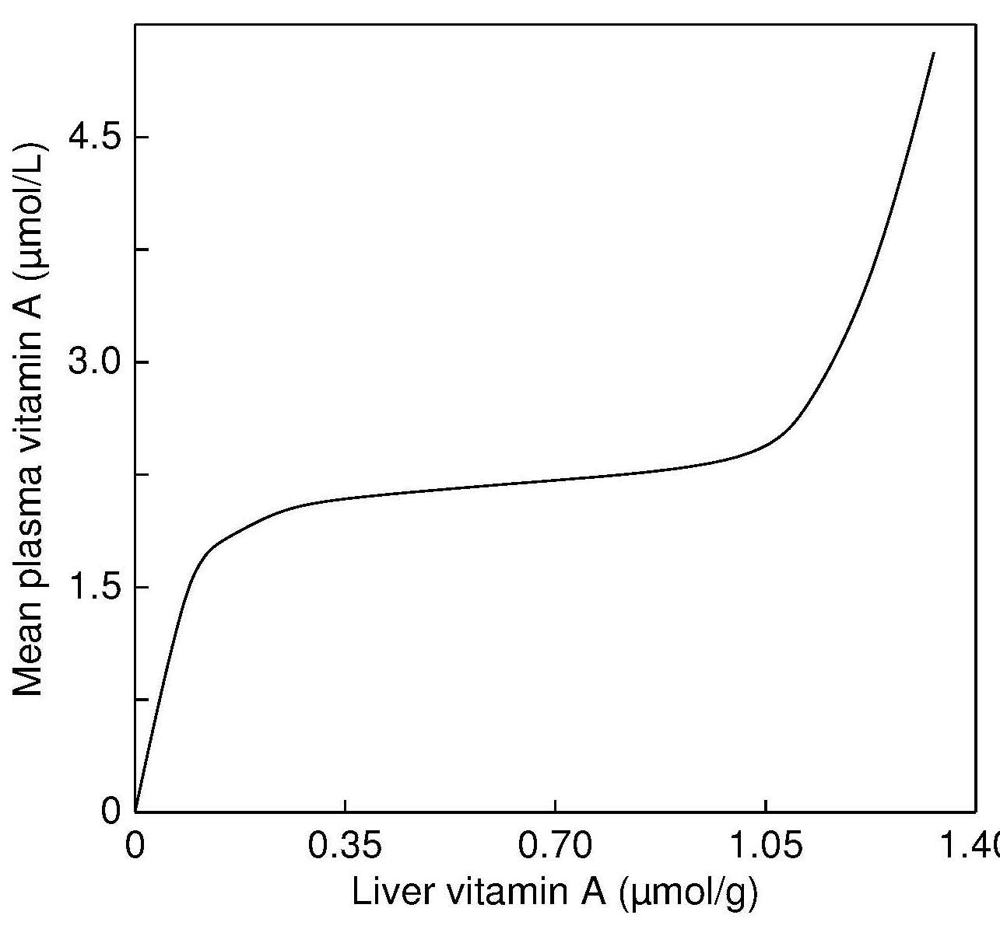
Figure 15.1. Hypothetical relationship between
mean plasma vitamin A levels and
liver vitamin A concentrations. From: Olson, 1984, . with permission of Oxford University Press.
even when there is evidence of functional impairment
(Hambidge, 2003). In such cases, alternative biomarkers may be needed.
The risk of contamination during sample collection, storage,
preparation, and analysis is a particular problem in trace
element analysis of blood. Trace elements are present in
low concentrations in blood but are ubiquitous in the
environment. Details of strategies to reduce the risk of
adventitious sources of trace-element contamination are
available in the International Zinc Nutrition Consultative
Group (IZiNCG) Technical Briefs
(2007, 2012).
In addition, for certain vitamins such as retinol and folate, exposure to
bright light and high temperature should be avoided, and for
serum folate, suitable antioxidants (e.g., ascorbic acid,
0.5% w/v) are added to samples to stabilize the vitamin
during collection and storage
(Bailey et al., 2015; Tanumihardjo et al., 2016).
Additional confounding factors in the collection and
analysis of micronutrients in blood are venous occlusion, hemolysis
(IZiNCG Technical Brief No.6, 2018),
use of an inappropriate anticoagulant,
collection-separation time, leaching of divalent cations
from rubber stoppers in the blood collection tubes, and
element losses produced by adsorption on the container
surfaces or by volatilization during storage
(Tamura et al., 1994; Bowen and Remaley, 2013).
For trace element analysis, trace-element-free evacuated tubes with
siliconized rather than rubber stoppers must be used.
Serum is often preferred for trace element analysis because,
unlike plasma, risk of adventitious contamination from
anticoagulants is avoided, as is the tendency to form
an insoluble protein precipitate during freezing.
Nevertheless, serum is more prone than plasma to both
contamination from platelets and to hemolysis. For capillary
blood samples, the use of polyethylene serum separators with
polyethylene stoppers are recommended
for analysis of trace-elements
(King et al., 2015).
15.3.2 Erythrocytes
The nutrient content of erythrocytes reflects chronic
nutrient status because the lifespan of these cells is quite
long (≈ 120d). An additional advantage is that nutrient
concentrations in erythrocytes are not subject to the
transient variations that can affect plasma. The
anticoagulant used for the collection of erythrocytes must
be chosen with care to ensure that it does not induce any
leakage of ions from the red blood cells. At present, the
best choice for trace element analysis is heparin
(Vitoux et al., 1999).
The separation, washing and analysis of erythrocytes is
technically difficult, and must be carried out with care.
For example, the centrifugation speed must be high enough to
remove the extracellular water but low enough to avoid
hemolysis. Care must be taken to carefully discard the
buffy coat containing the leukocytes and platelets, because
these cells may contain higher concentrations of the
nutrient than the erythrocytes. After separation, the
packed erythrocytes must be washed three times with isotonic
saline to remove the trapped plasma, and then homogenized.
The latter step is critical because during centrifugation
the erythrocytes become density stratified, with younger
lighter cells at the top and older denser cells at the
bottom.
There is no standard method for expressing the nutrient
content of erythrocytes, and each has limitations. The
methods used include nutrient per liter of packed cells, per
number of cells, per g of hemoglobin (Hb), or per g of dry
material
(Vitoux et al., 1999).
As an example, erythrocyte
folate is expressed as µg/L or nmol/L, whereas erythrocyte
zinc is often expressed as µg/g Hb. Concentrations of
folate in erythrocytes reflect folate stores
(Bailey et al., 2015),
whereas results for zinc concentrations in erythrocytes are
inconsistent. As a consequence, zinc in erythrocytes is presently not
recommended as a biomarker of zinc status by the
BOND Expert Panel
(King et al., 2015),
despite their use in several studies
(Lowe et al., 2009).
Erythrocytes can also be used for the assay of a variety of
functional biochemical biomarkers based on enzyme systems,
especially those depending on B‑vitamin-derived cofactors;
for more details, see
Section 15.4.2.
In such cases, the
total concentration of vitamin-derived cofactors in the
erythrocytes, or the extent of stimulation of specific
enzymes by their vitamin-containing coenzymes, is
determined. Some of these biomarkers are sensitive to
marginal deficiency states and accurately reflect body
stores of the vitamin.
15.3.3 Leukocytes
Leukocytes, and some specific cell types such as lymphocytes,
monocytes and neutrophils, have been used to monitor medium-
to long-term changes in nutritional status because they have
a lifespan which is slightly shorter than that of erythrocytes.
Therefore, at least in theory, nutrient concentrations in these
cell types should reflect the onset of a nutrient deficiency
state more quickly than do erythrocytes.
However, several technical factors have limited their use as biomarkers
of nutritional status. They include the relatively large
volumes of blood required for their analysis, the necessity
to process the cells as soon as possible after the specimen
is obtained, the difficulties of separating specific
leukocytic components from other white blood cell types, and
unwanted contaminants in the final cell preparation.
Additional technical difficulties may arise if the nutrient
content of the cell types varies with the age and size of
the cells. In some circumstances, for example during
surgery or acute infection, there is a temporary influx of
new granulocytes, which alters the normal balance between
the cell types in the blood and thus may confound the
results. Certain illnesses may also alter the size and
protein content of some cell types, and this may also lead
to difficulties in the interpretation of their nutrient
content
(Martin et al., 1993).
Hence it is not surprising
that results of studies on the usefulness of nutrient
concentrations such as zinc in leukocytes or specific cell
types as a biomarker of zinc exposure or status have been
inconsistent. As a result, zinc concentrations in
leukocytes or specific cell types were classified as “not
useful” by the Zinc Expert Panel
(King et al., 2015).
Detailed protocols for the collection, storage, preparation,
and separation of human blood cells are available in Dagur and McCoy
(2016).
Several methods are used to separate
leukocytes from whole blood. They include lysis of
erythrocytes, isolating mononuclear cells by density
gradient separation, and various non-flow sorting methods.
Of the latter, magnetic bead separation can be used to enrich specific
cell populations prior to flow cytometric analysis. Lysis
of erythrocytes is much quicker than density gradient
separation, and results in higher yields of leukocytes with
good viability. Nevertheless, density gradient separation
methods should be used when purification of cell populations
is required rather than simple removal of erythroid
contaminants. When flow cytometry is used, cells do not
necessarily need to be purified or separated for the study
of a particular subpopulation of cells. However, their
separation or enrichment prior to flow cytometry does
enhance the throughput and ultimately the yield of a desired
population of cells.
Again, as noted for erythrocytes, no standard method exists
for expressing the content or concentration of nutrients in
cells such as leukocytes. Methods that are used include
nutrient per unit mass of protein, nutrient concentration
per cell, nutrient concentration per dry weight of cells,
and nutrient per unit of DNA.
15.3.4 Breast milk
Concentrations of certain nutrients secreted in breast milk
— notably vitamins A,
D, B6, B12, thiamin and riboflavin,
as well as iodine and selenium — can reflect levels in the
maternal diet and body stores
(Dror and Allen, 2018).
Studies have shown that in regions where deficiencies of vitamin A
(Tanumihardjo et al., 2016),
vitamin B12
(Dror and Allen, 2018),
selenium
(Valent et al., 2011),
and iodine
(Dror and Allen, 2018)
are endemic, concentrations of these
micronutrients in breast milk are low.
In some settings, it is more feasible to collect breast milk
samples than blood samples. Nevertheless, sampling,
extraction, handling and storage of the breast milk samples
must be carried out carefully to obtain accurate information
on their nutrient concentrations. To avoid
sampling colostrum and transitional milk, which often have
very high nutrient concentrations, mature breast milk
samples should be taken at least 21d postpartum, when the
concentration of most nutrients (except zinc) has stabilized. Ideally,
complete 24h breast milk samples from both breasts should
be collected, because the concentration of some nutrients
(e.g., retinol) varies during a feed. In community-based
studies, however, this is often not feasible. As a result,
alternative breast milk sampling protocols have been
developed, the choice depending on the study objectives and
the nutrient of interest.
To date, only breast milk
concentrations of vitamin A have been extensively
used to provide information about the vitamin A
status of the mother and the breastfed infant
(Dror and Allen, 2018a; Dror and Allen, 2018b; Figure 15.2).
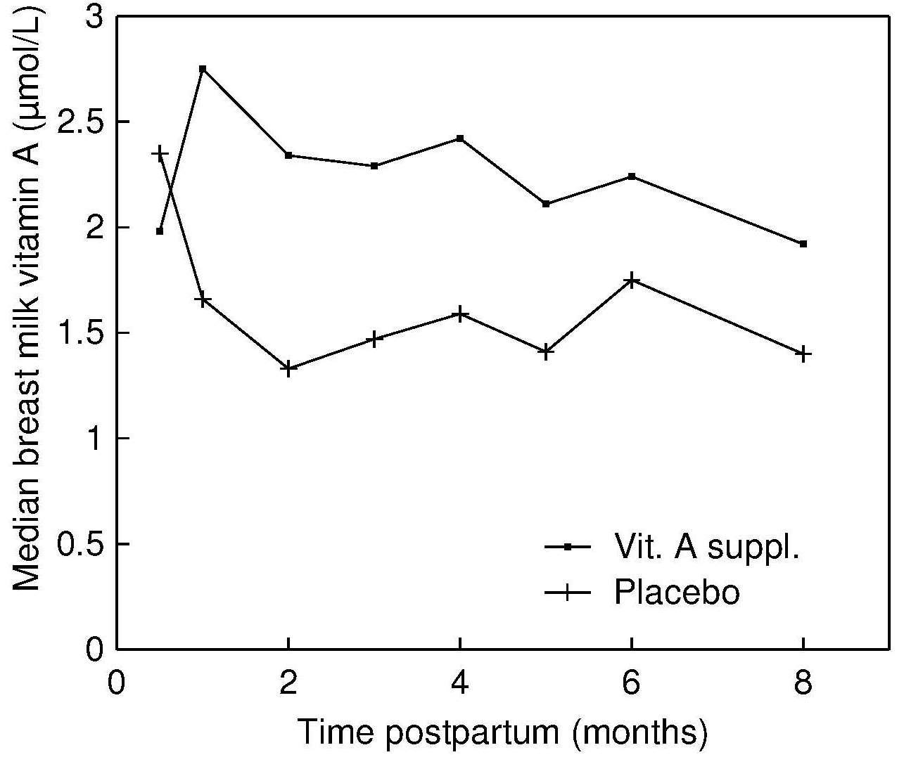
Figure 15.2. Retinol concentrations (μmol/L) in breast
milk at baseline and during the subsequent 8mos in
supplement and placebo groups. From: Stoltzfus et al., 1993, by permission of Oxford University Press.
For the assessment of breast milk vitamin A at the
individual level, the recommended practice is to collect
the entire milk content of
one breast that has not been used to feed an infant for at
least 2h, into a dark glass bottle on ice.
This procedure is necessary because the fat
content of breast milk, and thus the content of fat-soluble
vitamin A, increases from the beginning to the end of a single feed
(Dror and Allen, 2018).
If a full-breast milk
sample cannot be obtained, then an aliquot
(8–10mL) can be
collected before the infant starts suckling, by using either
a breast pump or manual self-expression
(Rice et al., 2000).
For population-based studies, WHO
(1996)
suggests collecting random samples of breast milk throughout the day and at
varying times following the last feed (i.e., casual samples)
in an effort to ensure that the variation in milk fat is
randomly sampled. When random sampling is not achievable,
the fat-soluble nutrients should be expressed relative to
fat concentrations as described in Dror and Allen
(2018).
The fat content of breast milk can be determined in the
field by using the creamatocrit method; details are
available in Meier et al.
(2006).
Before shipping to the laboratory, the complete breast milk
sample from each participant should be warmed to room
temperature and homogenized by swirling gently, from which an
aliquot of the precise volume needed for analysis can be
withdrawn. This aliquot is then frozen at −20°C in an amber
or yellow polypropylene tube with an airtight cap,
preferably in a freezer without a frost/freeze cycle, until
it is analyzed. This strategy of prehomogenization reduces
subsequent problems such as attaining uniform mixing after
prolonged storage in a freezer.
Table 15.1. Response to postpartum vitamin A supplementation
measured by maternal and infant indicators. The values
shown are means ±SD. A natural log transformation was
used in all cases to improve normality except for the serum
retinol data. The means and SDs of the transformed values
are presented. [n], number of samples. Data from
Rice et al., American Journal of Clinical Nutrition 71:
(799–806, 2000).
Indicator (month post-partum)
Vitamin A group [n]
Placebo group [n]
Standardized difference
Breast milk vit.A (µg/g fat) in casual samples (3 mo)
2.05±0.44 [36]
1.70±0.47 [37]
0.76
Breast milk vit.A (µmol/L) in casual samples (3 mo)
0.12±0.70 [36]
–0.18±0.48 [37]
0.50
Maternal serum retinol (µmol/L) (3 mo)
1.45±0.47 [34]
1.33±0.42 [35]
0.27
Breast milk vit.A (µmol/L) in full samples (3 mo)
–0.33±0.74 [33]
–0.45±0.53 [35]
0.19
Breast milk vit.A (µg/g fat) in full samples (3 mo)
1.87±0.51 [33]
1.82±0.45 [35]
0.10
compares the performance of breast milk
indicators in relation to their ability to detect a
response to postpartum vitamin A supplementation in
lactating Bangladeshi women
(Rice et al., 2000).
The most responsive breast milk indicator in this study was the
vitamin A content per gram of fat in casual breast milk
samples, based on the absolute values of the standardized
differences. For more details, see Dror and Allen
(2018).
The analytical methods selected for breast milk should be determined by the
chemo-physical properties of the nutrients, their form in
breast milk, and their concentrations. Reagents used must be
free of adventitious sources of contamination; bound forms
of some of the vitamins (e.g., folate, pantothenic acid,
vitamins D and B12) must be released prior to extraction
and analysis. Increasingly, multi-element mineral analysis
is performed by Inductively Coupled Plasma Mass Spectrometry
(ICP-MS), whereas for the vitamins, a combination of
High-Performance Liquid Chromatography (HPLC) (for thiamin,
vitamin A, and vitamin E), ultra-performance liquid
chromatography tandem mass spectrometry (UPLC-MS/MS) (for
riboflavin, nicotinamide, pantothenic acid, vitamin B6, and
biotin), and a competitive chemiluminescent enzyme
immunoassay (IMMULITE 1000; Siemens) for vitamin B12
(cobalamin) are being used
(Hampel et al., 2014).
15.3.5 Saliva
Several studies have investigated the use of saliva as a
biopsy fluid for the assessment of nutritional status. It
is readily available across all ages (newborn to elderly)
and collection procedures are noninvasive (unlike blood) so
that multiple collections can be performed in the field or
in the home.
Steroid and other nonpeptide hormones (e.g., thyroxine,
testosterone), some therapeutic and other drugs, and
antibodies to various bacterial and viral diseases, can be
measured in saliva. The effect of physiological measures of
stress such as cortisol and α‑amylase on inflammatory
biomarkers and immunoglobulin A (IgA) can also be
investigated in saliva specimens
(Engeland et al., 2019).
Studies on the utility of saliva as a biopsy material for
metabolomic research are limited. Walsh et al.
(2006)
reported a high level of both inter‑ and intra-individual
variation in salivary metabolic profiles which was not
reduced by standardizing dietary intake on the day before
sample collection.
Increasingly, energy expenditure, determined by the doubly
labeled water (DLW) method, has been used to assess the
validity of reported energy intakes measured using a variety
of dietary assessment methods
(Burrows et al., 2019).
In the DLW method, at least two independent saliva samples,
collected at the start and end of the observation
interval, are required to measure body water enrichment for
18O and 2H; for more details, see Westerterp
(2017).
Some micronutrient concentrations in saliva
have also been investigated as a measure of exposure
and/or status (e.g., zinc). However, interpreting the results is
difficult — results do not relate consistently to zinc
intake or status, and suitable certified reference materials
and interpretive values for normal individuals are not
available. Consequently, the BOND Zinc Expert Panel did not
recommend salivary zinc as a biomarker of zinc exposure or
status
(King et al., 2015).
Saliva is a safer diagnostic specimen than blood; infections
from HIV and hepatitis are less of a danger because of the
low concentrations of antigens in saliva (
(Hofman, 2001).
Some saliva specimens, depending on the assay, can be
collected and stored at room temperature, and then mailed to
the laboratory without refrigeration. However, before
collecting saliva samples, several factors must be
considered; these are summarized in Box 15.5.
Box 15.5. Factors to
be considered when collecting saliva samples
Is resting or stimulated saliva required? (Stimulated saliva can be
collected using sugar-free gum)
What volume of saliva is required for the assay?
Is special pretreatment and storage of the saliva required?
What is the health status of the participants
in relation to medications and/or diseases causing a dry mouth?
Will a quantitative or qualitative assay be performed?
Collection of saliva can be accomplished by expectorating
saliva directly into tubes or small paper cups, with or
without any additional stimulation. Participants may be
requested to rinse their mouth with distilled water prior
to the collection. In some cases (e.g., for the DLW
method), cotton balls or absorbent pads are used to collect
saliva. These can be immersed in a preservative which
stabilizes the specimen for several weeks. A disadvantage
of this method is that it may contribute interfering
substances to the extract and is therefore not suitable for
certain analytes.
Alternatively, devices can be placed in the mouth to collect
a filtered saliva specimen. These include a small membrane
sack that filters out bacteria and enzymes (Saliva Sac;
Pacific Biometrics, Seattle, Washington)
(Schramm and Smith, 1991),
or a tiny plastic tube that contains cyclodextrin to
bind the analyte. The latter device, termed the “Oral
Diffusion Sink” (ODS), is available from the Saliva Testing
and Reference Laboratory, Seattle, Washington
(Wade and Haegle, 1991).
The ODS device can be suspended in the mouth
using dental floss, while the subject is sleeping or
performing most of their normal activities with the
exception of eating and drinking. In this way, the content
of the analyte in the saliva represents an average for the
entire collection period.
15.3.6 Sweat
Collection of sweat, like saliva, is noninvasive and
can be performed in the field or in the home. Several
collection methods for sweat have been used: some are
designed to collect whole body sweat, whereas others collect
sweat from a specific region of the body, often using some
form of enclosing bag or capsule.
Shirreffs and Maughan
(1997)
have developed a method for
collecting whole body sweat involving the person exercising
in a plastic-lined enclosure. The method does not interfere
with the normal sweating process and overcomes difficulties
caused by variations in the composition of sweat from
different parts of the body. The method cannot be used for
treadmill exercise but can be used for subjects exercising
on a cycle ergometer.
A method designed to collect sweat from a specific region of
the body involves using a nonocclusive skin patch known as
an Osteo-patch. It consists of a transparent,
hypo-allergenic, gas-permeable membrane with a cellulose
fiber absorbent pad. The patch can be applied to the
abdomen or lower back for five days. During the collection period,
the nonvolatile components of sweat are deposited on the
absorbent pad, whereas the volatile components evaporate
through the semipermeable membrane. This method has been
used to study collagen cross-link molecules such as
deoxypyridinoline in sweat as biomarkers of bone resorption
(Sarno et al., 1999).
Potassium levels in sweat are used to
normalize the deoxypyridinoline values for variations in
sweat volume, as these are highly correlated with sweat output
and readily measured by flame atomic emission
or ion-selective electrode techniques. Sweat sodium losses
can also be measured using an Osteo-patch
(Figure 15.3;
Dziedzic et al., 2013).
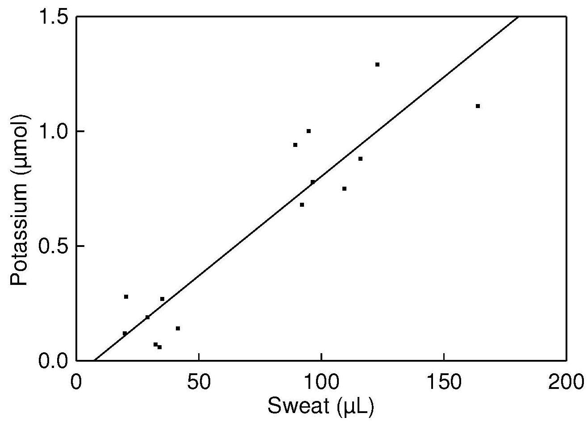
Figure 15.3. Total sweat potassium
from patches worn by five healthy subjects vs. total
volume of sweat collected. Data from
Sarno et al. (1999). Reproduced by permission of OxfordUniversity Press on behalf of the American Society for Nutrition.
A more recent method, known as the Megaduct sweat collector,
has been designed for the collection of sweat for mineral analyses
(Ely et al., 2012).
It appears to avoid skin
encapsulation and hidromeiosis (excessive sweating) which
may alter sweat mineral concentrations, and captures sweat
with mineral concentrations similar to
those reported for localized patches.
Differences in the composition of human sweat have been
linked, in part, to discrepancies in collection methods.
Errors may be caused by contamination, incomplete
collection, or real differences induced by the collection
procedure.
15.3.7 Adipose tissue
Adipose tissue is a biopsy material that is used in both clinical
(Cuerq et al., 2016)
and population studies
(Dinesen at al., 2018).
It can be used as a measure of
long-term dietary intake of fat-soluble nutrients,
reflecting intakes of certain fatty acids, vitamin E, and
carotenoids, all of which accumulate in adipose tissue.
Only fatty acids that are absorbed and stored in adipose
tissue without modification, and that are not synthesized
endogenously, can be used as biomarkers. Examples of fatty
acids that have been used include some specific n‑3 and n‑6
polyunsaturated fatty acids, trans unsaturated fatty acids,
and some odd-numbered and branched-chain saturated fatty
acids (e.g., pentadecanoic acid (15:0) and heptadecanoic acid
(17:0)). Several other factors that influence the
measurement of fatty acid profiles in adipose tissue must
also be taken into account; these are summarized in Box 15.6.
Box 15.6. Factors influencing measured fatty acid biomarker levels in adipose tissue. From
Arab (2003)
Dietary intake of the respondent
Relative amounts of other fatty acids in the adipose tissue samples
supplement use (such as fish‑oil capsules) by the respondent
Genetic polymorphisms of elongase and desaturase enzymes
Tissue-sampling site
Tissue-sampling procedures and subsequent sample handling and storage
Amount sampled in relation to the analytical method and detection limit
Lipolysis (the breakdown of fat stored in fat cells)
Nutritional status (Fe, Zn, Cu and Mg sufficiency)
Lipogenesis (the production of fat from the metabolism of protein and carbohydrate)
The tissue sampling site is also an important
consideration when measuring carotenoid
concentrations in adipose tissue.
Abdominal adipose tissue carotenoid concentrations
appear to have the strongest correlation with
long-term dietary carotenoid intakes and status
(Chung et al., 2009).
In contrast, for α‑tocopherol, relationships with
long-term dietary intakes are independent of adipose tissue site
(Schäfer and Overvad, 1990).
Several health outcomes associated with dairy fat
consumption have been investigated based on fatty acid
concentrations in adipose tissue. As an example, Mozaffarian
(2019),
in a large pooled analysis of
16 prospective cohort studies in the U.S., Europe, and
Australia, showed that higher levels of pentadecanoic acid (15:0),
heptadecanoic (17:0), and trans-palmitoleic acid (t16:1n‑7)
in adipose tissue were associated with a lower risk of
type 2 diabetes ( Figure 15.4;
Imamura et al., 2018).
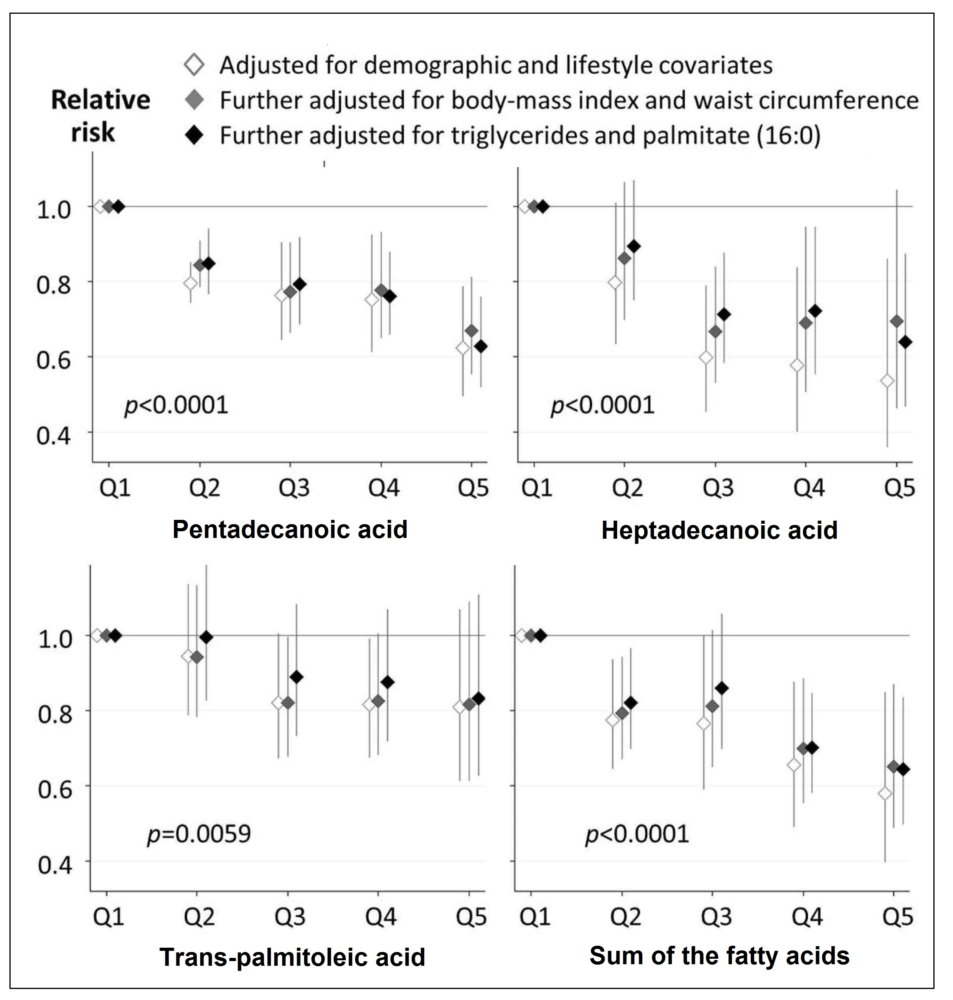
Figure 15.4. Prospective associations of quintile categories of fatty acid
biomarkers for dairy fat consumption with the risk of
developing type‑2 diabetes mellitus.
Cohort-specific
associations by quintiles were assessed in multivariable models in each cohort
and pooled with inverse-variance ± weighted meta-analysis. Cohort-specific
multivariable
adjustment was made. In the first model (open diamond), estimates were
adjusted for sex, age, smoking status, alcohol consumption, socioeconomic
status, physical
activity, dyslipidaemia, hypertension, and menopausal status for women.
Then, the estimates were further adjusted for BMI (grey diamond) and further
adjusted for triglycerides and palmitic acid (16:0) as markers of de novo lipogenesis (black diamond). To compute p-values for a trend across quintiles, each fatty acid
was evaluated as an ordinal variable in the most adjusted model.
Redrawn from Imamura et. al, PLoS medicine 15(10), e1002670.
Biomarkers of fatty acids in adipose tissue have also been
used to validate the classification of individuals as
vegetarian and non-vegetarian in the Adventist Health
Study‑2, based on the individuals self-reported patterns of
consumption of animal and plant-based products
(Miles et al., 2019).
Results confirmed that the self-reported
vegans had a lower proportion of the saturated fatty
acids investigated (especially pentadecanoic acid) in
adipose tissue, but higher levels of n‑6 polyunsaturated
fatty acid linoleic (18:2ω‑6) and a higher proportion of
total ω‑3 fatty acids compared to the self-reported
non-vegetarians. These trends are consistent with a vegan
dietary pattern.
Relationships between long-term dietary intakes of the
antioxidant nutrients — α‑tocopherol
and carotenoids — and
their corresponding concentrations in adipose tissue have
also been documented in healthy adults. In general, such
correlations exceed those reported between plasma
concentrations and diet
(Kardinaal et al., 1995; Su et al., 1998).
In a large epidemiologic study in which both plasma
and adipose tissue carotenoid concentrations were measured,
lycopene in adipose tissue
(Kohlmeier et al., 1997)
but not in plasma
(Su et al., 1998)
was found to be inversely associated with risk for myocardial infarction.
Simple, rapid sampling methods have been devised for
collecting subcutaneous adipose-tissue biopsies, generally
from the upper buttock
(El-Sohemy et al., 2002),
although other sites have also been investigated
(Chung et al., 2009).
For more discussion on the use of adipose tissue for
the assessment of long-term fatty acid and vitamin E status,
see Chapters 7 and 18.
15.3.8 Liver and bone
Iron and vitamin A are stored primarily in the body in the
liver, and calcium in the bones. Sampling these sites is
too invasive for population studies: they are sampled only
in research or clinical settings. Dual photon
absorptiometry (DXA) is now used to determine total bone
mineral content, and is described in detail in Chapter 23.
15.3.9 Hair
Scalp hair has been used as a biopsy material for screening
populations at risk for certain trace element deficiencies
(e.g., zinc, selenium) and to assess excessive exposure to
heavy metals (e.g., lead, mercury, arsenic). Detailed reviews are
available from the IAEA
(1993; 1994).
Caution must be used when
interpreting results for hair mineral analysis from
commercial laboratories because results can be unreliable
(Hambidge, 1982; Seidel et al., 2001; Mikulewicz et al., 2013).
Hair incorporates trace elements and heavy metals into the
matrix when exposed to the blood supply during
synthesis within the dermal papilla. When the growing hair
approaches the skin surface, it undergoes keratinization and
the trace elements accumulated during its formation become
sealed into the keratin protein structures and isolated from
metabolic processes. Hence, the trace element content of
the hair shaft reflects the quantity of the trace elements
available in the blood supply at the time of its synthesis,
not at the time of sampling
(Kempson et al., 2007).
Analysis of trace element levels in hair has several
advantages compared to that of blood or urine; these are
summarized in Box 15.7.
Box 15.7. Some of the
advantages of hair as a biopsy material
Higher concentrations of trace elements are found in hair, relative
to blood or urine, making analysis easier; results for the
ultra-trace elements such as chromium and manganese are more
consistent.
Concentrations are more stable and hair trace
element levels are not subject to the rapid fluctuations
associated with diet, diurnal variation, and so on.
No trauma is involved in the collection of hair samples.
No special preservatives are needed, and samples can be stored
in plastic bags at room temperature without deterioration.
Nevertheless, a major limitation of
the use of scalp hair is its susceptibility to exogenous
contamination. Hopps
(1977)
noted that sweat from the
eccrine sweat glands may contaminate the hair with elements
derived from body tissues. Other exogenous materials that
may modify the trace element composition of hair include
air, water, soap, shampoo, lacquers, dyes, and medications.
Selenium in antidandruff shampoos, for example,
significantly increases hair selenium content, and the
selenium cannot be removed by standardized hair-washing
procedures
(Davies, 1982).
For other trace elements, results
from hair-washing procedures have been equivocal. Some
(Hilderbrand and White, 1974),
but not all
(Gibson and Gibson, 1984),
investigators have observed marked changes in
hair trace element concentrations after hair cosmetic
treatments. The relative importance of these sources
remains uncertain, and standardized procedures for hair
sampling and washing prior to analysis are essential.
The currently recommended hair sampling method is to use the
proximal
10–20mm of hair, cut at skin level from the
occipital portion of the scalp (i.e., across the back of the
head in a line between the top of the ears) with stainless
steel scissors. This procedure, involving the sampling of
recently grown hair, minimizes the effects of abrasion of
the hair shaft and exogenous contamination. In addition,
the specimens collected in this way will reflect the uptake
of trace elements or heavy metals
by the follicles
4–8 weeks
prior to sample collection provided that the rate of hair growth
has been normal. Before washing the hair specimens to
remove exogenous contaminants such as atmospheric
pollutants, water and sweat, any nits and lice should be
removed under a microscope or magnifying glass
where necessary, using Teflon-coated tweezers. For each sample details
of the ethnicity, age, sex, hair-color, height, weight,
season of collection, smoking, presence of disease states
including malnutrition, and use of antidandruff shampoos or
cosmetic treatments, should always be recorded to aid in the
interpretation of the data.
Some investigators suggest that the rate of hair growth
influences hair trace element concentrations. Scalp hair
grows at about 1cm/mo, but in some cases of severe
protein-energy malnutrition
(Erten et al., 1978)
and the zinc
deficiency state acrodermatitis enteropathica
(Hambidge et al., 1977),
growth of the hair is impaired. In such cases,
hair zinc concentrations may be normal or even high. No
significant differences, however, were observed in the trace
element concentrations of scalp and pubic hair samples
(DeAntonio et al., 1982),
despite marked differences in the rate
of hair growth at the two anatomical sites. These results
suggest that the relative rate of hair growth is not a
significant factor in controlling hair trace element levels.
Several different washing procedures have been investigated,
including the use of nonionic or ionic detergents, followed
by rinsing in distilled or deionized water to remove absorbed
detergent. Various organic solvents such as
hexane-methanol, acetone, and ether, have also been
recommended, either alone or in combination with a detergent
(Salmela et al., 1981).
Washing with nonionic detergents
(e.g., Triton X‑100) (with or without acetone) is preferred
as nonionic detergents are less likely to leach bound trace
minerals from the hair and yet are effective in removing
superficial adsorbed trace elements. Washing with chelating
agents such as EDTA should be avoided because of the risk of
removing endogenous trace minerals from the hair shaft
(Shapcott, 1978).
After washing and rinsing, the hair samples must be vacuum-
or oven-dried depending on the chosen analytical method, and
stored in a desiccator prior to laboratory analysis. When
the traditional analytical methods such as flame Atomic
Absorption Spectrophotometry (AAS) or multi-element
Inductively- Coupled Plasma Mass Spectrometry (ICP-MS) are
used, washed hair specimens must be prepared for analysis
using microwave digestion, or wet or dry ashing. In the
future, tetramethylammonium hydroxide (TMAH) to solubilize
hair at room temperature may be used, eliminating
time-consuming ashing or wet digestion
(Batista et al., 2018).
Non-destructive instrumental neutron activation
analysis (INAA) can also be used, when the washed hair
specimens are placed in small, weighed, TE-free, polyethylene
bags or tubes, and oven dried for 24h at 55°C. After
cooling in a desiccator, the packaged specimens are sealed
and weighed, prior to irradiation in a nuclear reactor.
A Certified Reference Material (CRM) for human hair is
available (e.g., Community Bureau of Reference, Certified
Reference Material no. 397) from the Institute for Reference
Materials and Measurements, Retieseweg, B-2440 Geel,
Belgium. Currently, interpretation of hair trace element
concentrations for screening populations at risk of
deficiency is limited by the absence of universally accepted
reference values. For a detailed step-by-step guide to
measuring hair zinc concentrations, the reader is advised to
consult IZiNCG
(2018).
In summary, more data on other tissues from the same
individuals are urgently required to interpret the
significance of hair trace element concentrations. Hair is
certainly a very useful indicator of the body burden of
heavy metals such as lead, mercury, cadmium and arsenic. It
is also valuable in the case of selenium and chromium, and
possibly zinc. Data for other elements such as iron,
calcium, magnesium, and copper should be interpreted
with caution
(Seidel et al., 2001).
15.3.10 Fingernails and toenails
Nails have been investigated as biopsy materials for trace
element analysis
(Bank et al., 1981; van Noord et al., 1987).
Nails, like hair, also incorporate trace elements into the
nail matrix when it is exposed to the blood supply within
the nail matrix germinal layer, and thus reflect the
quantity of trace elements available in the blood supply at
the time of nail synthesis
(He, 2011).
During the
growth of the nail, the proliferating cells in the nail
germinal layer are converted into horny lamellae. Nails
grow more slowly than hair at rates ranging from 1.6mm/month
for toenails to 3.5mm/month for fingernails, and, like hair,
are easy to sample and store. In cases where nail growth is
arrested, as may occur in onychophagia (compulsive nail
biting), nails should not be used
(He, 2011).
The elemental composition of toenails has been used as a
long-term biomarker of nutritional status for some elements,
notably selenium. Selenium concentrations in toenails
correlate with geographic differences in selenium exposure
( Figure 15.5),
(Morris et al., 1983; Hunter et al., 1990).
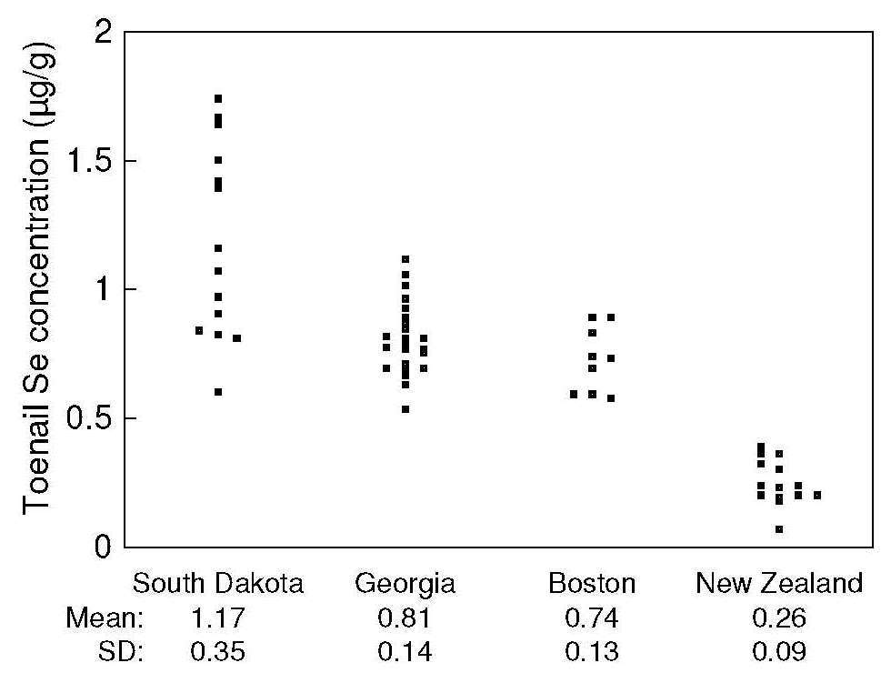
Figure 15.5. Toenail
selenium concentrations in a high-selenium area (South
Dakota), Georgia, and Boston, compared with a low-selenium
area (New Zealand). Redrawn from
Morris et al., 1983).
At the individual level, concentrations of selenium in toenails
correlate with those in habitual diets, serum, and whole
blood
(Swanson et al., 1990).
In a recent study of young children in Laos, nail zinc
concentrations were higher at endline in those children
receiving a daily preventive zinc supplement (7–10mg
Zn/d) for
32–40 weeks compared to those given a
therapeutic zinc dose (20g) for only 10d (geometric
mean, 95% CI) (115.8,
111.6–119.9 vs.
110.4,
106.0–114.8µg/g; p=0.055)
(Wessells et al., 2020).
Nail zinc concentrations
have also been used as a longer-term retrospective measure
of zinc exposure in case-control studies. For example, in
a prospective study of U.S. urban adults (n=3,960), toenail
zinc was assessed in relation to the incidence of diabetes,
although no significant longitudinal association was found
(Park et al., 2016).
The elemental composition of nails is influenced by age,
possibly sex, rate of growth, onychophagia (compulsive nail
biting), geographical location, and possibly by disease
states (e.g., cystic fibrosis, Wilson's disease, Alzheimer's
disease, and arthritis)
(Takagi et al., 1988; Vance et al., 1988).
Environmental contamination and chemicals
introduced by nail polish could be a potential problem,
unless they are removed by washing
(He, 2011).
Bank et al.
(1981)
recommend
cleaning fingernails with a scrubbing
brush and a mild detergent, followed by mechanical scraping
to remove any remaining soft tissue before clipping. Nail samples
should then be washed in aqueous non-ionic detergents rather
than organic solvents, and dried under vacuum prior to
preparation and analysis by the same traditional analytical
techniques as are used for hair specimens. Tetramethylammonium hydroxide (TMAH) can also
be used to solubilize nails at room temperature, eliminating
time-consuming ashing or wet digestion, thus enhancing
sample throughput
(Batista et al., 2018).
For non-destructive analytical methods such as instrumental
neutron activation analysis (INAA) and the newer technique
involving laser-induced breakdown spectroscopy (LIBS),
cleaning fingernail clippings with acetone (analytical
grade) in an ultrasonic bath for 10min followed by
drying in air for
20–30min is recommended
(Riberdy et al., 2017).
Preliminary results suggest that in situ
measurement of fingernail zinc by LIBS has potential as a
non-invasive, convenient screening tool for identifying zinc
deficiency in populations, but may lack the precision
required to generate absolute concentrations for individuals
(Riberdy et al., 2017).
A non-destructive portable X-ray
fluorescence system has also been used to explore the
measurement of zinc in a single nail clipping; more studies
are needed to establish its usefulness
(Fleming et al., 2020).
Unlike hair, no Standard Reference Materials presently exist for nail trace element
analysis. Instead, in-house controls prepared from
homogenous pooled samples of powdered fingernails and
toenails can be prepared and spiked with several different
known quantities of the trace element of interest and the
recoveries measured. Alternatively, an aliquot of the
in-house control can be sent to a reputable laboratory
and the results compared. Likewise, there are no universally accepted
reference values for nail trace element concentrations,
limiting their use for assessing risk of trace element
deficiencies in populations. More studies comparing the
trace element composition of fingernails and toenails with corresponding
concentrations in other biomarkers of body tissues and
fluids, as well as habitual dietary intakes, are needed
before any definite recommendations on the use of fingernails or toenails
as a biomarker of exposure or status can be made.
15.3.11 Buccal mucosal cells
Buccal mucosal cells have been investigated as a biopsy
sample for assessing α‑tocopherol status
(Kaempf et al., 1994;
Chapter 18) and dietary lipid status
(McMurchie et al., 1984;
Chapter 7), but interpretive criteria to
assess these results are not available. These cells have
also been explored as a biomarker of folate status
(Johnson et al., 1997),
although smoking is a major confounder as a
localized folate deficiency is generated in tissues exposed
to cigarette smoke
(Piyathilake et al., 1992).
Buccal mucosal cells are also increasingly used in epidemiological
studies that involve DNA
(Potischman, 2003).
Buccal mucosal cells can be sampled easily and noninvasively
by gentle scraping with a spatula. Cells must be washed
with isotonic saline prior to sonication and analysis.
Contamination of buccal cells with food is a major problem,
however, and has prompted research into new methods for the
collection of buccal mucosal cells.
15.3.12 Urine
If renal function is normal, biomarkers based on urine or the urinary excretion rate of a nutrient
or its metabolite can be used to assess exposure or
status for some trace elements (e.g., chromium, iodine,
selenium), the water-soluble B‑complex vitamins,
and vitamin C.
The method depends on the
existence of a renal conservation mechanism that reduces the
urinary excretion of the nutrient or metabolite when body
stores are depleted. Urine cannot be used to assess the
status of the fat-soluble vitamins A, D, E, and K, as metabolites are not
excreted in proportion to the amount of these vitamins
consumed, absorbed, and metabolized.
Urinary excretion can also be used to measure exposure to
certain nutrients, as well as some food components and food groups. Isaksson
(1980)
was one of the first investigators to use
urinary nitrogen excretion levels in single 24h urine
samples to estimate exposure to protein intakes from a 24h
food record. Since that time, several urinary biomarkers
for other nutrients, and for certain food components and food
groups, have been investigated, in some cases as biomarkers
of exposure or status, as noted in
Section 15.2.
Urinary excretion assessment methods almost always reflect
recent dietary intake or acute status, rather than chronic
nutritional status. If information on long-term exposure is
required, multiple 24h urine samples
collected over a period of weeks should be used.
For example, to obtain a stable
measurement of long-term exposure to sodium, potassium,
calcium, phosphate and magnesium, three 24h urine samples
from healthy adults spaced over a predefined time period are
required
(Sun et al., 2017).
For some of the water-soluble vitamins (e.g., thiamin,
riboflavin and vitamin C), the amount excreted depends on
both the nutrient saturation of tissues and on the dietary
intake. Furthermore, urinary excretion tends to reflect intake
when intakes of the vitamins are moderate to high relative
to the requirements, but less so when intakes are habitually
low. In other circumstances such as infections,
trauma, the use of antibiotics or medications, and
conditions that produce negative balance, increases in
urinary excretion may occur despite depletion of body
nutrient stores. For example, drugs with chelating
abilities, alcoholism, and liver disease can increase
urinary zinc excretion, even in the presence of zinc
deficiency.
For measurement of a nutrient or a corresponding metabolite
in urine, it is essential to collect a clean, properly
preserved urine sample, preferably over a complete 24h
period. Thymol crystals dissolved in isopropanol are often
used as a preservative
(Mente et al., 2009).
For nutrients that are unstable in urine
(e.g., vitamin C), acidification
and cold storage are required to prevent degradation.
To monitor the completeness of any 24h urine collection,
urinary creatinine excretion is often measured (Chapter 16). This approach assumes that daily urinary creatinine
excretion is constant for a given individual, the amount
being related to muscle mass. In fact, this excretion can
be highly variable within an individual
(Webster and Garrow, 1985),
and varies with age
(Yuno et al., 2011).
Box 15.8. Possible reasons (other than the under-collection of 24h urine samples) for
low PABA recovery values
Failure to take all three PABA tablets
Taking tablets late in the evening with
a large meal that reduces gastric emptying time and uptake
in the intestine
Impaired renal function
Errors in preparation of urine aliquots
Analytical errors
Estimates
of the within-subject coefficient of variation for
creatinine excretion in sequential daily urine collections
range from 1% to 36%
(Jackson, 1966; Webster and Garrow, 1985).
Hence, creatinine determinations may
detect only gross errors in 24h urine collections
(Bingham and Cummings, 1985).
British investigators have used an alternative marker,
paraaminobenzoic acid (PABA), to assess the completeness of
urine collections
(Bingham and Cummings, 1985).
Para-aminobenzoic acid is taken in tablet form with meals — one
tablet of 80mg PABA three times per day.
It is harmless,
easy to measure, and rapidly and completely excreted in
urine.
Possible explanations for low PABA recovery values besides
the under-collection of urine samples are summarized in
Box 15.8. Studies have shown that any urine collection
containing less than 85% of the administered dose is
probably incomplete
(Bingham and Cummings, 1985),
suggesting
that PABA is a useful marker for monitoring the completeness
of urine collection.
The incomplete nature of urine collections with a mean PABA
recovery of < 79% is emphasized in
Figure 15.6.
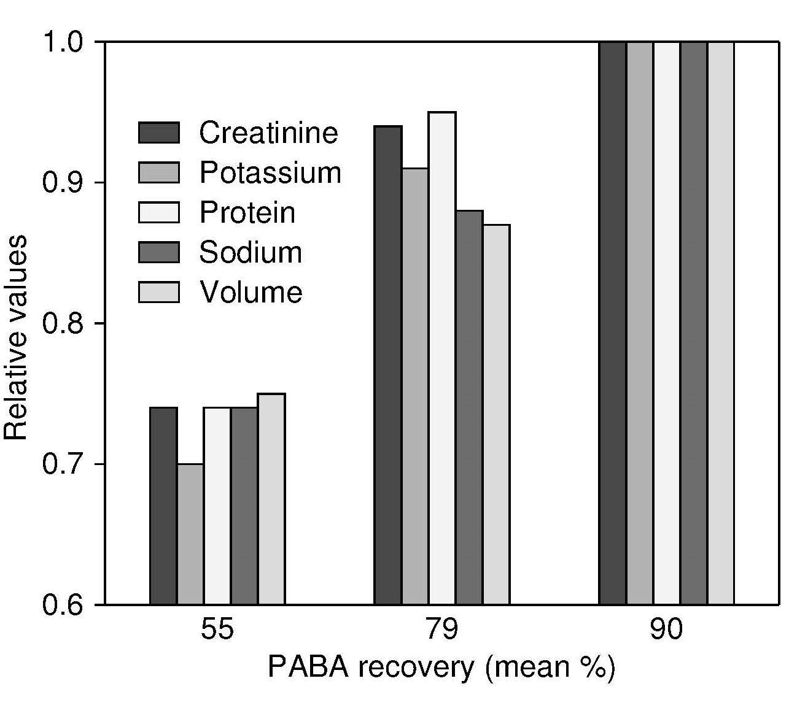
Figure 15.6. The relationship of urinary PABA recovery and urinary
creatinine, potassium, protein (derived from nitrogen),
sodium, and volume in three groups of patients with median
PABA recovery of 55% (n=28), 79% (n=24), and 90% (n=21). The urinary
variables are expressed in relative terms in relation to the
highest PABA recovery group, which is set to 1.0.
Data from Johansson et al., 1998. reproduced with permission of Cambridge University Press.
A method has been devised for adjusting urinary
concentrations of nitrogen, sodium and potassium in cases
where the recovery of PABA is between 50% and 80%. It is
based on the linear relationship between the PABA recovery and
the amount of analytes in the urine, as shown in Figure 15.7,
and allows the use of incomplete 24h urine collections.
However, this adjustment method is not recommended in cases
where PABA recovery is below 50%
Figure 15.7.
Several investigators have measured urinary biomarker
concentrations of nitrogen, sodium and potassium to validate
dietary intakes in population studies, some of which
assessed the completeness of 24h urine collection by
analysis of PABA concentration in the urine.
For example, Wark et al.
(2018)
assessed the validity of intakes in
adults (n=212) of protein, sodium and potassium estimated
from 3 × 24h recalls taken 2 weeks apart using an online
24h recall tool (myfood24) by comparison with urinary
biomarkers.
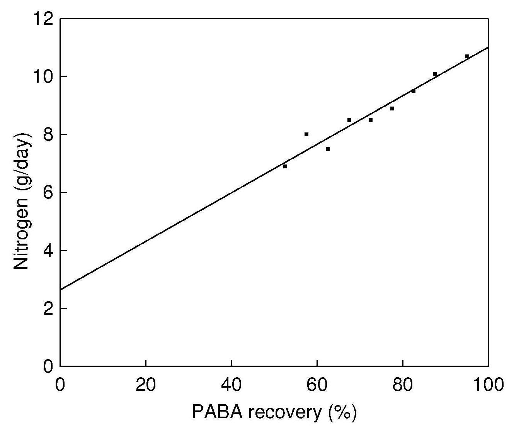
Figure 15.7. The relationship between PABA recovery
(%) and the nitrogen output in urine (g/d). The PABA
recovery values have been classified into 5% intervals
from 50% to 90% and one interval between 90% and
110%. The number of subjects in each interval is 10 or
more. Total n=312, r2=0.9752.
Data from:
Johansson et al., 1999,
Participants were instructed to take one 80mg
PABA tablet with each of three meals during the 24h urine
collection period, and urinary concentrations for nitrogen,
sodium and potassium were then adjusted for completeness of urine
samples when PABA recovery was
50–85%. The investigators calculated
that 93% of PABA, 81% of nitrogen, 86% of sodium and
80% of potassium were excreted within 24h.
Table 15.2.
Table 15.2. Geometric means and 95% confidence interval (CI)
for protein, potassium, sodium and total sugar intake and
density as assessed by myfood24 and biomarkers relating
to the first clinic visit. Nutrient density for protein, potassium,
sodium and total sugars is expressed in g/MJ of total energy intake.
n is the number of participants who had both
the dietary assessment measure and the biomarker.
Data from Wark et al., BMC medicine, 16(1), 136.
myfood24
Biomarker/reference tool
n
Geometric mean (95% CI)
n
Geometric mean (95% CI)
Nutrient intake:
Protein (g)
208
70.5 (66.1, 75.2)
192
68.4 (64.1, 72.8)
Potassium (g)
208
2.7 (2.5, 2.9)
192
2.1 (1.9, 2.3)
Sodium (g)
208
2.3 (2.1, 2.5)
192
1.8 (1.7, 2.0)
Nutrient density:
Protein (g/MJ)
208
9.5 (9.0, 9.9)
180
6.2 (5.8, 6.7)
Potassium (g/MJ
208
0.36 (0.35, 0.38)
180
0.19 (0.18, 0.21)
Sodium (g/MJ)
208
0.31 (0.29, 0.33)
180
0.16 (0.15, 0.18)
shows the geometric mean and 95% confidence interval (CI)
for protein, potassium and sodium intake and associated
nutrient densities as assessed by myfood24 online recall and
the biomarkers relating to the first clinic visit.
Estimates of intake from myfood24 were similar to the
biomarker measurements for protein, but higher for both
potassium and sodium. Such discrepancies may be attributed
to reporting error, daily variation in diet, and limitation
of food composition tables, especially for sodium as a
result of addition of discretionary salt to foods in
manufacture or discretionary salt at the table.
Twenty-four-hour urine samples can be difficult to collect
in non-institutionalized population groups. Instead,
first-voided fasting morning urine specimens are often used,
as they are less affected by recent dietary intake. Such
specimens were used in the U.K. National Diet and Nutrition
Survey of young people
4–18y
(Gregory et al., 2000).
Special Bori-Vial vials containing a small amount of boric
acid as a preservative can be used for the collection of
first-voided fasting samples. Sometimes, only
nonfasting casual urine samples can be collected. Such
casual urine samples are not recommended for studies at the
individual level, because concentrations of nutrients and
metabolites in such samples are affected by liquid
consumption, recent dietary intake, body weight,
physical activity and other factors.
When first-voided fasting or casual urine specimens are
collected, urinary excretion is sometimes expressed as a
ratio of the nutrient to urinary creatinine in an effort to
correct for both diurnal variation and fluctuations in urine
volume. For some urinary biomarkers,
specific gravity has been used to correct for urine volume
in casual urine samples rather than urinary creatinine
(Newman et al., 2000).
As a biomarker of recent exposure to iodine at the
population level,
WHO / UNICEF / ICCIDD, 2007
recommend
collecting casual urine samples and expressing the results in
terms of the population median urinary iodine concentration
(µg/L). A median urinary iodine
concentration of
100–199µg/L in
school-age children, for example, indicates adequate iodine
nutrition. However, this does not quantify the percentage
of individuals with habitually deficient or excessive intakes
of iodine.
Daily iodine intake can be calculated from urinary
iodine based on the following assumptions:
over 90% of iodine is excreted in the
urine in the subsequent 24–48h;
median 24h urine volume is about 0.0009L/h/kg;
average bioavailability of iodine in the diets is 92%.
Therefore:
\[\small \mbox {Iodine intake = 0.0009 × 24/0.92 × Wt × Ui }\]
\[\small \mbox{ = 0.0235 × Wt × Ui }\]
where Wt is the body weight (kg) and Ui is the urinary
iodine (µg/L).
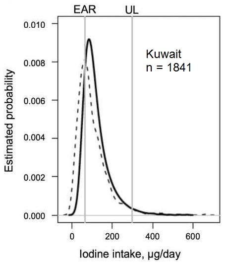
Figure 15.8. The distribution of iodine
intakes among children aged
4–8y derived from a single
spot urine sample (broken line) and
after adjustment for within- and between-subject variation (unbroken line).
The Estimated Average Requirement
(EAR) for children aged
4–8y is 65
and the Tolerable Upper Intake Level
(UL) is 300µg/d.
Data from Zimmermann et al., 2016, by permission of Oxford University Press.
This equation has been applied to calculate
daily iodine intakes of children based on casual urinary
iodine concentrations collected during national surveys in
Kuwait, Oman, Thailand, and Qatar, and during a regional study in
China. In these surveys, a second repeat casual urine sample
was collected in a random subsample of the children on a
nonconsecutive day (Figure 15.8).
This permits an adjustment to be made
to the observed distribution of iodine intakes to remove the
variability introduced by day-to-day variation in iodine
intakes within an individual (i.e., to remove the
within-subject variation) using specialized software, in this
case the Iowa State University method
(Carriquiry, 1999).
For more details of this adjustment method, see Chapter 3.
Table 15.3. Prevalence of inadequate iodine intake by the EAR
and UL cutoff method with the use of internal (“true”)
variance estimates to adjust the usual intake distribution
in children aged
4–8 and
9–13y in Kuwait, Oman and China.
Values are means ± SEs. Age groups of children correspond to the U.S. DRI groups.
Age group of children
Unadjusted prevalence below the EAR
True prevalence below the EAR, adjusted with internal variance
Unadjusted prevalence above the UL
True prevalence above the UL, adjusted with internal variance
4–8y
Kuwait
35.3 ± 1.7
19.4 ± 5.7
2.4 ± 0.5
0.2 ± 0.4
Oman
24.3 ± 1.8
7.5 ± 4.7
2.7 ± 0.7
0.2 ± 0.5
China
20.5 ± 2.5
10.1 ± 4.4
10.2 ± 1.9
8.2 ± 4.0
9–13y
Kuwait
30.9 ± 1.4
17.4 ± 3.6
0.7 ± 0.2
0.1 ± 0.1
Oman
18.6 ± 1.1
10.5 ± 2.1
0.4 ± 0.2
0.2 ± 0.2
China
24.0 ± 3.9
3.5 ± 7.3
1.7 ± 1.2
0.0 ± ND
Figure 15.8
shows that the adjustment process yields a
distribution with reduced variability that preserves the
shape of the original observed distribution. The adjusted
distribution can then be used to predict the proportion of
the population at risk of inadequate or excessive intakes of
iodine using the Estimated Average Requirement
(EAR) / Tolerable Upper Level (UL) cutoff point
method; see Chapter 8b for more details. Note that
the proportion of children classified with inadequate
intakes in both Kuwait and China was markedly lower based on
the adjusted distribution of intakes compared to the
unadjusted distribution (Table 15.3).
15.4 Biomarkers of function
Functional biomarkers can be subdivided into
two groups: functional biochemical, and functional
physiological or behavioral, biomarkers. They measure the
extent of the functional consequences of a specific nutrient
deficiency and hence have greater biological significance
than the static biomarkers, as noted earlier
some functional biomarkers are also being used as substitutes
for chronic disease outcomes, when they are termed “surrogate biomarkers”
(Yetley et al., 2017).
Functional biochemical biomarkers serve as early biomarkers
of subclinical deficiencies. They may involve the
measurement of an abnormal metabolic product in blood or
urine samples arising from a deficiency of a nutrient-
dependent enzyme. Alternatively, for some nutrients,
reduction in the activity of enzymes that require a nutrient
as a coenzyme or prosthetic group can be measured. For
example, the activity of erythrocyte glutamic oxaloacetic
transaminase has been reported to better reflect the intake
of vitamin B6 than the plasma concentrations of pyridoxal
phosphate, especially in adults < 65y
(Elmadfa and Meyer, 2014).
Changes in blood components related to intake of a nutrient
can also be determined, and load or tolerance tests
conducted on individuals in vivo. Sometimes, tissues or
cells are isolated and maintained under physiological
conditions for biomarkers of in vivo functions. Biomarkers
related to host defense and immunocompetence are the most
widely used of this type. For some of the nutrients (e.g.,
niacin), functional biochemical biomarkers may not be
available.
In research settings, stable isotope techniques are used to
measure the size of the body pool(s) of a nutrient (e.g.,
the vitamin A content of the liver; see Chapter 18), and for
kinetic modeling to assess the integrated whole-body
response to changes in nutrient status (e.g., protein,
copper, zinc). The latter approach is especially useful for
detecting subtle changes that may not be responsive to
static indices
(King et al., 2000). Figure 15.9
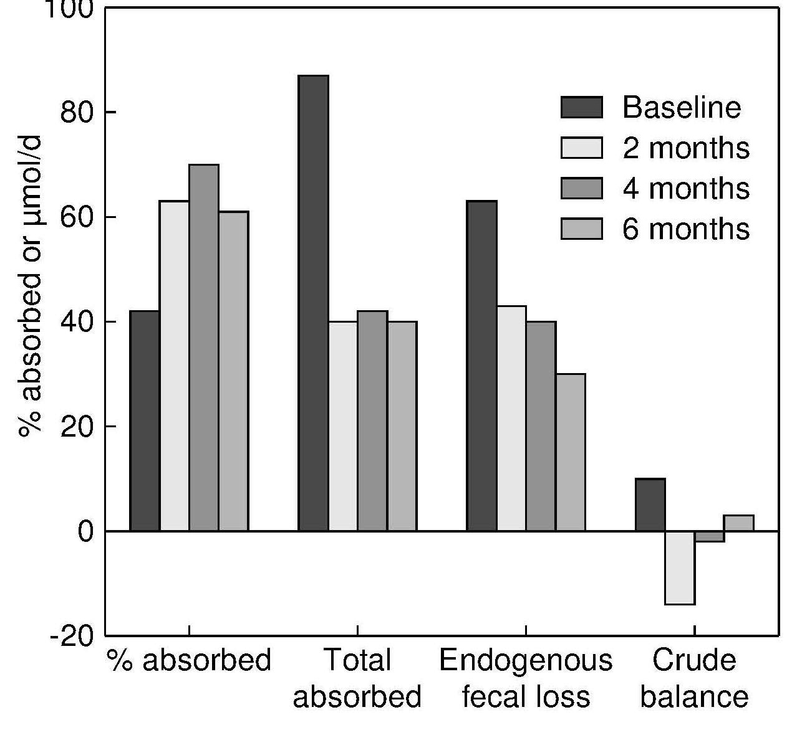
Figure 15.9. Changes in intestinal zinc absorption and endogenous loss
over 6mos while on a low-zinc intake of
63µmol/d (4.1mg/d)
Data from King et al., 2000, by permission of Oxford University Press.
shows a marked reduction in the endogenous fecal excretion of zinc
over a 6mo period on a low-zinc diet. Such a reduction can
be quantified only with isotopic techniques.
New molecular techniques are now used in research to
measure, for example, mRNA for proteins (e.g.,
metallothionein), the expression of which is regulated by
metal ions such as zinc
(Hirschi et al., 2001).
Correlations between biomarkers of DNA damage and
micronutrient status are also being investigated in view of
the growing knowledge of their roles as cofactors or
as components of DNA repair enzymes. For example, marginal
zinc depletion impairs DNA repair and increases the number
of DNA strand breaks. However, these breaks are not
specific markers for zinc depletion as insufficient intakes
of choline, folate, and niacin also cause an increase in DNA
strand breaks
(Zyba et al., 2017).
Genetic variation can
now be identified through DNA testing, and when used in
combination with nutritional biomarkers, can assist in
understanding variations in metabolism and in identifying
subpopulations at risk of disease; see
Section 15.7.
Most functional physiological and behavioral biomarkers are
less invasive, often easier to perform, and more directly
related to disease mechanisms or health status than are
functional biochemical biomarkers. In
general, however, functional physiological or behavioral
biomarkers are not very sensitive or specific and must be
interpreted in conjunction with more specific nutrient
biomarkers. As noted earlier, these functional
physiological and behavioral biomarkers often measure the
net effects of contextual factors that often include social
and environmental factors as well as nutrition.
Disturbances in these biomarkers are generally associated
with more prolonged and severe nutrient deficiency states
or in some circumstances, risk of chronic diseases
(Yetley et al., 2017).
Examples include measurements of impairments in growth,
of response to vaccination (as a biomarker of immune function),
and of vision, motor development, cognition,
depression and high blood pressure, all of
which are less invasive and easier to perform. Some
important examples of functional biomarkers
include the following:
Functional biochemical biomarkers
Abnormal concentrations of metabolic
products in blood or urine arising from reduced activity of
a nutrient-dependent enzyme (e.g., urinary excretion of
xanthurenic acid, formiminoglutamic acid (FIGLU), and
methylmalonic acid as a test of vitamin B6 and
vitamin B12 deficiency.
Changes in enzyme activities that depend on a given
nutrient (e.g., erythrocyte glutathione reductase activity
for riboflavin; erythrocyte transketolase activity for
thiamin; erythrocyte glutamic oxaloacetic transaminase for
vitamin B6).
Changes in blood
components (e.g., whole blood hemoglobin for iron
assessment; thyroglobulin for iodine status; retinol-binding
protein for vitamin A; holotranscobalamin for vitamin B12).
Functional physiological and behavioral biomarkers
In vitro tests of in vivo functions
(e.g., lymphocyte proliferation for protein-energy, zinc, and
iron).
Load and tolerance tests and induced responses in
vivo (e.g., Relative Dose Response: load test for vitamin A;
CobaSorb test: load test to assess vitamin B12
absorption).
Induced responses in vivo (e.g.,
delayed-type hypersensitivity, often used to identify
protein-energy malnutrition).
Spontaneous in vivo
responses (e.g., dark adaptation / vision at low intensity
for vitamin A; taste acuity for zinc; handgrip strength for
lower-body strength).
Growth or developmental responses (e.g., growth velocity
for protein-energy, zinc, etc.; cognitive performance for
iron, iodine, vitamin D, folate, and vitamin B12;
motor development for micronutrients; depression
for folate and zinc).
15.4.1 Abnormal metabolic products in blood or urine
Many of the vitamins and minerals act as coenzymes or
as prosthetic groups for enzyme systems. During deficiency,
the activities of these enzymes may be reduced, resulting in
the accumulation of abnormal metabolic products in the blood
or urine.
Xanthurenic acid excretion in urine, together
with other tryptophan metabolites,
is elevated in vitamin B6 deficiency because the activity of
kynureninase in the tryptophan-niacin pathway is reduced.
This leads to the increased formation and excretion in the urine of
xanthurenic acid and other tryptophan metabolites, including both
kynurenic acid and 3-hydroxyl-kynurenine. Determination of urinary
xanthurenic acid is usual because it is easily
measured.
Plasma homocysteine concentrations are elevated in
both vitamin B12 and folate deficiency.
In vitamin B12 deficiency, when levels fall below 300pmol/L,
the activity of methionine synthase, an enzyme that requires
vitamin B12, is reduced. This enzyme catalyzes
the remethylation of homocysteine to methionine. Hence,
reduction in the activity of methionine synthase leads to increases in plasma
homocysteine concentrations
(Allen et al., 2018).
The remethylation pathway of homocysteine to methionine is also
dependent on folate, so when folate status is low or deficient, then
plasma homocysteine is generally elevated
(Bailey et al., 2015).
Therefore, in folate or vitamin B12 deficiency,
homocysteine accumulates and concentrations in plasma
increase. Measurement of plasma homocysteine as a sensitive
functional biomarker of low folate status has been recommended
by the BOND Folate Expert Panel. However, they highlight its
poor specificity because it is elevated with other B‑vitamin
deficiencies besides folate and vitamin B12(including
vitamin B6, and riboflavin), with
lifestyle factors, with renal insufficiency, and with drug treatments
(Bailey et al., 2015).
Elevated circulating homocysteine
concentrations have been associated with an increased risk
of hypertension, cardiovascular disease, and cerebrovascular
disease based on observational studies. Several mechanisms
have been proposed whereby hyperhomocysteinemia may mediate
risk of these diseases. Details of the collection and
analyses of plasma samples for homocysteine are available in
Bailey et al.
(2015).
Methyl malonic acid (MMA) concentrations
in plasma or urine are elevated in vitamin B12 deficiency
but unaffected by folate or other B vitamins.
Vitamin B12 serves as a cofactor for the enzyme methylmalonic-CoA mutase.
This enzyme is required for the conversion of
methylmalonyl-CoA to succinyl-CoA. Methylmalonic acid (MMA)
is a side reaction product of methylmalonyl-CoA metabolism,
and increases with vitamin B12 depletion.
Concentrations of MMA reflect B12 stores rather than recent B12 intake
and are considered a relatively specific and sensitive
biomarker of vitamin B12 status by the BOND Vitamin B12 Expert Panel
(Allen et al., 2018).
In serum or
urine, MMA concentrations reflect the adequacy of B12 status
for the biochemical function of the enzyme methylmalonic-CoA
mutase, which is required for the conversion of
methylmalonyl-CoA to succinyl-CoA. MMA, usually a side
reaction product of methylmalonyl CoA metabolism, increases
with B12 depletion
(Allen et al., 2018).
If urinary MMA is
to be measured and the collection of 24h urine samples is
not feasible, then urinary creatinine should also be
assayed to correct for variability in urine concentration
and results expressed as per mg or mmol creatinine.
For more information on elevated levels of homocysteine and MMA,
readers are advised to consult the two BOND reports: Bailey et al.
(2015)
and Allen et al.
(2018).
15.4.2 Reduction in activity of enzymes
Methods that involve measuring a change in the activity of
enzymes which require a specific nutrient as a coenzyme or
prosthetic group are generally the most sensitive and
specific. Often the enzyme is
associated with a specific metabolic defect and associated
nutrient deficiency (e.g., lysyl oxidase for copper,
aspartate aminotransferase for vitamin B6, glutathione
reductase for riboflavin, transketolase for thiamin).
The activity of the enzyme is sometimes measured both with and
without the addition of saturating amounts of the coenzyme
added in vitro. The in vitro stimulation of the enzyme by
the coenzyme indicates the degree of unsaturation of the
enzyme, and therefore a measure of deficiency. When
nutritional status is adequate, the added coenzyme has
little effect on the overall enzyme activity, so the ratio
of the two measurements is very close to unity. However,
when a deficiency exists, the added coenzyme increases
enzyme activity to a variable extent, depending on the
degree of deficiency. Such tests, often termed “enzyme
stimulation tests”, may be used for vitamin B6,
riboflavin and thiamin, and employ the activities of
aminotransferases, glutathione reductase and transketolase
respectively. Erythrocytes are used for these enzyme
stimulation tests because erythrocytes are particularly
sensitive to marginal deficiencies and provide an accurate
reflection of body stores for vitamin B6, riboflavin, and thiamin.
Indeed, such vitamin-deficient erythrocytes
may respond to supplements of B6, riboflavin, and thiamin
within 24 hours.
The test measures the extent to which the erythrocyte enzyme
has been depleted of coenzyme, and the results are expressed
either as the Activation coefficient or as the Percentage Stimulation:
\[\small \mbox{Activation coefficient = } \frac {\mbox {activity of the coenzyme − stimulated enzyme}}{\mbox {activity of unstimulated enzyme}}\]
\[\small \mbox{Percentage Stimulation = }\frac{\mbox {stimulated activity – basic activity}}{\mbox{basic activity}}× \mbox{100%}\]
Table 15.4
Table 15.4. erythrocyte stimulation tests of nutritional status
for three vitamins.
AC: Activation coefficient
Modified from Bates CJ, Thurnham DI, Bingham SA, Margetts BM, Nelson M.
(1997). Biochemical markers of nutrient status. In: Margetts BM, Nelson
M (eds.) Design Concepts in Nutritional Epidemiology, 2nd ed. Oxford
University Press, Oxford, pp. 170–240.
Vitamin Thiamin
Enzyme Transketolase
Coenzyme and comments thiamine pyrophosphate
Status: AC: 1.00-1.25
Normal or marginal status except
when basic transketolase activity is low, then probably chronic deficiency.
Unstable enzyme. Store at −70°C or measure fresh
Status: AC: > 1.25
Biochemical deficiency, high
values likely to be acute deficiency
1.15
–1.25 may
be at intermediate risk
Riboflavin
Glutathione reductase
adenine dinucleotide
Status: AC: 1.00-1.30
Normal
status
Very stable enzyme
Status: AC: 1.30-1.80
Marginal/deficient status
Measure of tissue status.
Status: AC: > 1.80
Deficient,
intake <0.5mg riboflavin/d
Unreliable in -ve N2 balance
Pyrodoxine
Aspartate aminotransferase
pyridoxal phosphate
Status: AC: 1.00-1.50
Normal status
No agreed standard method
Status: AC: 1.50-2.00
Marginal status
No agreement on thresholds
Status: /AC: > 2.00
Deficient status
Uncertain stability at −20°C
also presents comments on the three enzymes (transketolase, glutathione
reductase, and aspartate aminotransferase) together with each of
their corresponding vitamin-containing coenzymes
(thiamine pyrophosphate, adenine dinucleotide, pyridoxal
phosphate).
Also given are values for
activation coefficients for the three B vitamins
(thiamine, riboflavin, and pyridoxine)
and their interpretation.
Ideally, the assay selected should: (a) reflect the
amount of the nutrient available to the body, (b) respond
rapidly to changes in supply of the nutrient, and (c) relate
to the pathology of deficiency or excess. Measurement of
the copper-containing enzyme lysyl oxidase is an example of
an assay that fulfils these criteria. Connective tissue
defects occur during the early stages of the copper
deficiency syndrome. These defects can be attributed to the
depressed activity of lysyl oxidase inhibiting cross-linking
of collagen and elastin.
Many nutrients have more than one functional role
and thus the activities of several enzymes may be affected during the
development of a deficiency, thereby providing additional
information on the severity of the deficiency state. For
example, in the case of copper, platelet
cytolysyl oxidasechrome c oxidase (Chapter 24) is
more sensitive to deficiency than
plasma erythrocyte superoxide dismutase, the activity of which is reduced only
in more severe deficiency states
(Milne and Nielsen, 1996).
15.4.3 Changes in blood components
Instead of measuring the activity of an enzyme, changes in
blood components that are related to the intake of a
nutrient can be measured. A well-known example is the
measurement of hemoglobin concentrations in whole blood for
iron deficiency anemia; iron is an essential component of
the hemoglobin molecule (Chapter 17). Other examples
include the determination of the two transport proteins —
transferrin and retinol-binding protein (RBP)
— as indicators of iron and vitamin A status,
respectively,
serum holotranscobalamin, a functional biomarker of
vitamin B12 deficiency
(Allen et al., 2018),
and serum thyroglobulin, a thyroid-specific protein and a
storage and synthesis site for thyroid
hormones
(Rohner et al., 2014;
Serum RBP is used increasingly as a proxy for serum retinol
to assess vitamin A status at the population level,
correlating closely with serum retinol concentrations, at
least in individuals with normal kidney function who are not
obese
(Tanumihardjo et al., 2016).
RBP in serum is also
more stable, and easier and cheaper to analyze than retinol,
although as with retinol, levels are reduced during
inflammation. RBP is synthesized primarily in
hepatocytes as the apo-form and secreted bound to retinol as
the holo-RBP complex to provide vitamin A to peripheral
tissues; one molecule of holo-RBP binds to one molecule of retinol. However, RBP
is not secreted when stores of
vitamin A are low and retinol limited. Because holo‑RBP is complexed with
transthyretin, loss of holo‑RBP to glomerular filtration in
the kidney is prevented.
Serum holotranscobalamin (holoTC), the
component that delivers vitamin B12 to the tissues, has
become increasingly used as a functional biomarker of B12,
with a specificity and sensitivity slightly higher than
that of serum methylmalonic acid (MMA). Serum holoTC is
most sensitive to recent intake, when concentrations can be
increased even if stores are low. Concentrations of holoTC,
like serum MMA, are elevated in persons with impaired
renal function, but are unaffected by pregnancy. Currently,
there is no consensus on the cutoff to use and the assay of
serum holoTC is expensive and not widely available
(Allen et al., 2018).
For more details see Chapter 22.
Serum thyroglobulin is recommended by WHO (2007)
for monitoring the iodine status of school-aged children
and a reference range for this age group
has been established. Thyroglobulin concentrations
in dried blood spots are also under investigation as a
sensitive biomarker of iodine status in pregnant women
(Stinca et al., 2017).
15.4.4 In vitro tests of in vivo functions
Tissue samples or cells can be removed from test subjects
and isolated and maintained under physiological conditions.
Attempts can then be made to replicate in vivo functions
under in vitro conditions. Tests related to host-defense
and immunocompetence are probably the most widely used
assays of this type. They appear to provide a useful,
functional, and quantitative measure of nutritional status.
Thymus‑dependent lymphocytes originate in the thymus
and are the main effectors of cell‑mediated immunity.
During protein-energy malnutrition, both the proportion and
the absolute number of T‑cells in the peripheral blood may
be reduced.Peripheral T‑lymphocytes are isolated from heparinized blood,
then stained with fluorescent-labeled monoclonal antibodies (mABs),
prior to analysis on a flow cytometer. The flow cytometer measures
the properties of light scattering by the cells and the emission of
light from fluorescent-labeled mAbs bound to the surface of
the cell; details are given in Field
(1996).
Lymphocyte proliferation assays are also examples of tests
of this type. They are functional measures of cell-mediated
immunity, assessed by the in vitro responses of lymphocytes
to selected mitogens. Again, peripheral T‑lymphocytes are
isolated from blood and incubated in vitro with selected
mitogens
(Field, 1996).
Details are summarized in Chapter 16.
Other in vitro tests include the erythrocyte hemolysis test
and the dU suppression test, although the latter is no
longer used. In the former, the rate of hemolysis of
erythrocytes is measured; the rate correlates inversely with
serum tocopherol levels (Chapter 18). Unfortunately, this
test is not very specific, as other nutrients (e.g., selenium) influence the rate of erythrocyte hemolysis.
15.4.5 Load tests and induced responses in vivo
In the past, functional biomarkers conducted on the
individual in vivo included load and tolerance tests
(Solomons and Allen, 1983).
Today, many of these tests are
no longer used and have largely been superseded by other
methods.
Load tests were used to assess deficiencies of water-soluble
vitamins (e.g., tryptophan load test for pyridoxine,
histidine load test for folic acid, vitamin C load test),
and certain minerals (e.g., magnesium, zinc and selenium).
In a load test, the baseline urinary excretion of the
nutrient or metabolite is first determined on a timed
preload urine collection
(Robberecht and Deelstra, 1984).
Then
a loading dose of the nutrient or an associated compound is
administered orally, intramuscularly, or intravenously.
After the load, a timed sample of the urine is collected
and the excretion level of the nutrient or a metabolite determined.
The net retention of the nutrient is calculated
by comparing the basal excretion data with net excretion
after the load. In a deficiency state, when tissues are not
saturated with the nutrient, excretion of the nutrient or a
metabolite will be low because net retention is high.
The relative dose response (RDR) test
is the most well known functional in vivo load test in use today.
This test is accepted as a functional reference method to assess the
presence or absence of low vitamin A stores in the liver
(Chapter 18). However, in the RDR test, unlike the
conventional loading tests described above, the response is
greatest in deficient individuals. The principal of RDR is
based on the observation that in vitamin A inadequacy,
retinol binding protein (RBP) that has not bound to retinol
(apo‑RBP) accumulates in the liver. Following the
administration of a test dose of vitamin A (commonly in the
form of retinyl palmitate), some of the retinol binds to the
accumulated apo‑RBP in the liver and the resulting holo‑RBP
(i.e., RBP bound to retinol) is rapidly mobilized from the
liver into the circulation. In individuals with vitamin A deficiency,
a small dose of retinyl palmitate leads to a
rapid sustained increase in serum retinol, whereas in
vitamin A replete individuals, there is very little
increase. An RDR value > 20% is considered to reflect
vitamin A stores of < 0.7µmol/g liver
(WHO, 1996).
Investigations are underway to explore the assessment of the
RDR test based on serum RBP to determine low hepatic
vitamin A stores instead of serum retinol in an effort to eliminate
the need to use HPLC for the serum retinol assay
(Fujita et al., 2009).
The modified relative dose response (MRDR)
has been developed as an alternative because
the RDR test requires two blood samples per
individual. The MRDR uses 3,4‑didehydroretinyl acetate
(DRA), or vitamin A2 instead of retinyl palmitate as the
challenge dose, and requires only a single blood sample,
taken between 4 and 7h after dosing. Serum is analyzed for
both 3,4,‑didehydroretinol (DR) and retinol in the same
sample, and the ratio of DR to retinol in serum is called
the MRDR value and used to indicate liver reserves. Values
≥ 0.060 at the individual level usually indicate insufficient
liver reserves (≤ 0.1µmol retinol/g), whereas values < 0.06
are indicative of sufficient liver reserves (≥ 0.1µmol
retinol/g). Group mean ratios of
< 0.030 appear to correlate with adequate status. The MRDR
test has been used in numerous population groups, in
both children and adults worldwide. The values obtained, however, are
not useful for defining vitamin A status above adequacy.
For more details of the use of RDR and MRDR as functional
biomarkers of vitamin A status, see
Tanumihardjo et al.
(2016).
The qualitative CobaSorb test is another example of an
in vivo load test. It is used to detect malabsorption of
vitamin B12 and has replaced the earlier Schilling test and
its food-based version (using cobalamin-labeled egg yolk),
which have been discontinued. For the CobaSorb test, a dose
of 9mg of crystalline B12 in water is administered orally
at 6h intervals over a 24h period, and the increase in
serum holo-transcobalamin measured on the following day.
The test is a qualitative assay and is used to determine if
patients will respond to low-dose B12 supplements or
will require treatment with pharmacological doses. The test does
not provide a quantitative estimate of bioavailability of
vitamin B12 — for more details of the test, see
Brito et al.
(2018).
Delayed-type hypersensitivity is a well known example
of a biomarker based on an induced response in vivo. This is a
direct functional measure of cell-mediated immunity used in
both hospital and community settings. Suppression of cell-mediated
immunity signals a failure of multiple components
of the host-defense system. The test involves injecting a
battery of specific antigens intradermally into the forearm;
those commonly used are purified protein derivative (PPD),
mumps, Tricophyton, Candida albicans, and
dinitrochlorobenzene (DNCB). In healthy persons re-exposed to
recall antigens intradermally, the recall antigens induce the T‑cells to respond
first by proliferation and then by the release of soluble
mediators of inflammation, producing an induration
(hardening) and erythema (redness). This induced response
is noted at selected time intervals, and is often reduced in
persons with protein-energy malnutrition and micronutrient
deficiencies such as vitamin A, zinc, iron and pyridoxine.
However, the test is not specific enough to detect
individual micronutrient deficiencies
(Raiten et al., 2015).
For details of the technique, interpretation, and some of
the limitations of DTH skin testing, see Ahmed and Blose
(1983).
15.4.6 Spontaneous in vivo responses
Functional tests based on spontaneous in vivo responses
often measure the net effects of contextural factors that may
include social and environmental factors as well as
nutrition. Hence, they are less sensitive and specific than
biomarkers that assess nutrient
exposure, status, or biochemical function
(Raiten and Combs, 2015).
As a consequence, they should be assessed
alongside more specific biomarkers so that the functional
impact of the status of a specific nutrient can be
identified.
Formal dark adaptometry is one of several functional
biomarkers based on spontaneous physiological
in vivo responses that exist for vitamin A.
It was the classical method for assessing
night blindness (i.e., poor vision in low-intensity light)
associated with vitamin A deficiency. This condition arises when
the ability of the rod cells in the retina to adapt in the
dark, and the ability of the pupils to properly meter light in and out of
the eye, are impaired. However, the
equipment used for formal dark adaptometry was
cumbersome, and the method very time-consuming, so it is no longer used.
Rapid dark adaptation test (RDAT) has superseded
formal dark adaptometry, with results that correlate with those of the classical method.
The test is based on the measurements of the
timing of the Purkinje shift, in which the peak wavelength
sensitivity of the retina shifts from the red toward the
blue end of the visual spectrum during the transition
from photopic or cone-mediated day vision to scotopic
or rod-mediated night vision. This shift causes the
sensitivity of blue light to appear brighter than
that of red light under scotopic lighting conditions.
The test requires a light-proof room, a light source,
a dark, non-reflective work surface, a standard X-ray view box,
and sets of red, blue, and white discs;
details are given in Vinton and Russell
(1981).
The RDAT, however, is not appropriate for young children.
Pupillary threshold test can be used for children
from age 3y, for adults, and under field conditions
(Tanumihardjo et al., 2016).
The test measures the threshold of light at which pupillary contraction occurs
under dark adapted conditions. Minimal cooperation from the subjects is
required for the test which is performed in a darkened
facility, often a portable tent, and takes about 20min per subject.
Special pairs of goggles have
been invented to measure the pupillary response to light
stimuli — details are given in Chapter 18.
Capillary fragility has been used as a functional biomarker
of vitamin C deficiency since 1913 because frank petechial
hemorrhages occur in overt vitamin C deficiency. The test,
however, is not very specific to vitamin C deficiency states
(see Chapter 19); static biochemical tests are preferred to
assess the status of vitamin C.
Taste acuity can be associated
with suboptimal zinc status in children and adults,
(Gibson et al., 1989),
as well as in some disease states in which
secondary zinc deficiency may occur (e.g., cystic fibrosis,
Crohn's disease, celiac sprue and chronic renal disease
(Desor and Maller, 1975; Kim et al., 2016).
Positive associations between taste acuity for salt and biomarkers of
zinc status (i.e., erythrocyte zinc) have been reported in
the elderly
(Stewart-Knox et al., 2005).
Moreover, an increase in taste acuity for salt was reported in older
adults in response to 30mg zinc/day compared to a placebo
during a six-month double-blind randomized controlled trial
(Stewart-Knox et al., 2008).
Taste acuity can be assessed by using the forced drop method that measures both the detection and recognition thresholds
(Buzina et al., 1980),
or the recognition thresholds only
(Desor and Maller, 1975).
An electrogustometer, which measures taste threshold by
applying a weak electric current to the tongue, has been
used in some studies
(Prosser et al., 2010).
Many other factors affect
taste function, and taste acuity alone should not be used to
measure zinc status.
Handgrip strength measured using a dynamometer, is a
well-validated proxy measurement for lower-body strength
(Abizanda et al., 2012).
It has been used in
several intervention studies designed to improve muscle
strength and function among non-malnourished sarcopenic
older adults at high risk for disability
(Bauer et al., 2015; Tieland et al., 2015).
15.4.7 Growth responses
Responses in growth have limited sensitivity and are not
specific for any particular nutrient, and hence
are preferably measured in association with other
more specific nutrient biomarkers.
Linear growth is considered the best functional
biomarker associated with the risk of zinc deficiency in
populations. It is is usually measured alongside
serum zinc, a biomarker of zinc exposure and status at the population
level. The International Zinc Consultative Group (IZiNCG)
recommend using the percentage of children under five years
of age with length-for-age (LAZ) or height-for-age z‑score
(HAZ) < −2 as a functional biomarker to estimate
the risk of zinc deficiency in a population
(Technical Brief No.01, 2007;de Benoist et al., 2007).
The WHO Global Database on Child Growth and Malnutrition
also use
LAZ or HAZ < −2 to define children as
“stunted”, and
include stunting as one of the six global nutrition targets for 2030.
In a healthy population, about 2.5% of all
children have a LAZ or HAZ < −2. In communities where
short stature is the norm, stunting often goes unrecognized.
Figure 15.10
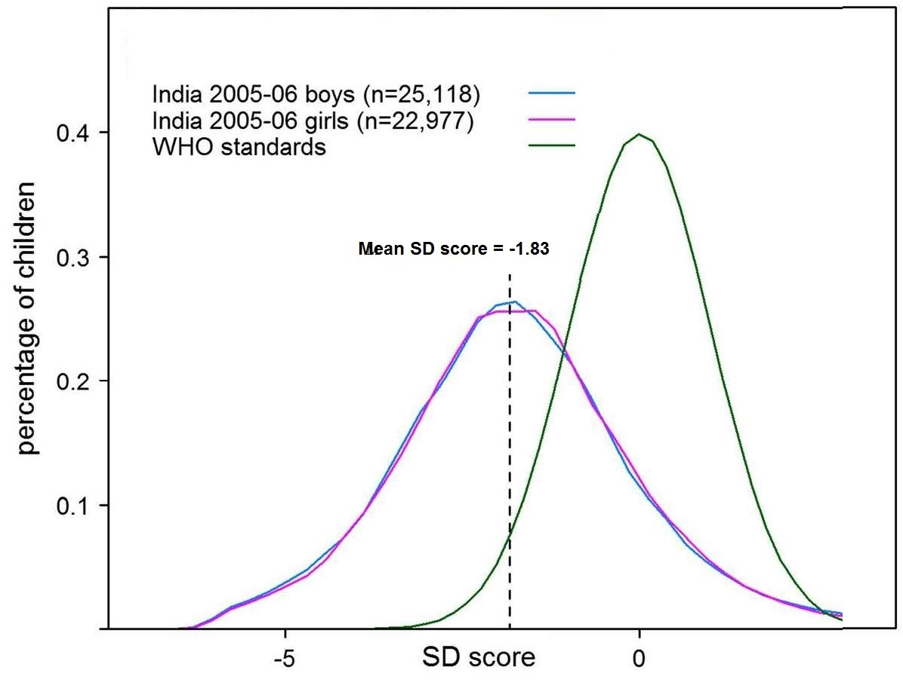
Figure 15.10. Distribution
of length/height-for-age Z‑scores of children from the Indian
National Family Health Survey
2005–2006. Modified from
de Onis and Branca (2016).
presents the distribution of
length/height-for-age Z‑scores of children from the India
National Family Health Survey
2005–2006, and shows the
entire distribution shifted to the left compared with the
WHO Child Growth Standards
(WHO, 2006).
These results highlight the fact that
those children who are stunted are only a subset of those with
linear growth retardation. Here all the children were
affected by some degree of linear growth retardation
(de Onis and Branca, 2016).
Height-for-age difference (HAD) defined as a child's
height minus the median reference value of height-for-age of
WHO Child Growth Standard, expressed in centimeters,
is recommended to describe and compare changes in height as children age
(Leroy et al., 2014).
Leroy and colleagues argue that HAZ is inappropriate to
evaluate changes in height as children age because
HAZ scores are constructed using standard
deviations from cross-sectional data that change with age. Leroy et al.
(2015)
compared changes in growth in populations of children 2–5y
using HAD vs. HAZ from cross-sectional data based on six
Demographic and Health Surveys (DHS). There was no evidence
of population-level catch-up in linear growth in children
aged
2–5y when using HAD, but
instead a continued
deterioration reflected in a decrease in mean HAD between 2 and 5y. In
contrast, based on HAZ, there was no change in mean HAZ
(Leroy et al., 2015);
see Chapter 13 for more details.
Linear growth velocity is also used as a functional
biomarker of malnutrition in infants and young children.
It can be assessed via measurements of changes in recumbent
length for children < 2y and changes in height for older
children. A high degree of precision is required for these
measurements because two measurements are needed.
During infancy, length increments can be assessed at 1mo
intervals for the first 6mos and at 2mos intervals from 6 to
12mos. Increments measured over 6mos are the minimum
interval that can be used to provide reliable data during
adolescence
(WHO, 1995).
Seasonal variation in growth may
occur. In high-income countries, height velocity, for
example, may be faster in the spring than in the fall and
winter.
The following formula is used to calculate velocity:
Velocity = (x2 − x1) / (t2 − t1) where x2 and x1 are values of
the measurement on two occasions t2 and t1. Length or
height velocity is normally expressed as cm/y. Currently,
no uniform criteria exist for defining growth faltering
based on growth velocity data, although in practice zero
growth in two consecutive periods is sometimes used
(WHO, 1995).
WHO has developed a set of growth velocity charts which are
recommended for international use
(de Onis et al., 2011).
Knee height measurements using a portable knemomter can be used
to provide a more sensitive short-term measure of growth
velocity in children > 3y based on lower leg length
( Davies et al., 1996).
This equipment was used to
obtain accurate measurements of the lower leg length of
indigenous Shuar children aged
5–12y from Ecuador; the
technical error of the measurement (TEM) was low — 0.18mm
(Urlacher et al., 2016).
For children < 3y, a
mini-knemometer can be used to measure lower leg length
(Kaempf et al., 1998).
15.4.8 Developmental responses
The assessment of cognitive function requires rigorous
methodology. Even with careful methodology, a relationship
between cognitive function and nutrient deficiency can
be established only by: (a) documenting clinically important
differences in cognitive function between deficient subjects
and healthy placebo controls, and (b) demonstrating
improvement in cognitive function after an intervention.
The individuals should be matched, and the design should
preferably be a double-blind, placebo-controlled,
randomized intervention
(Lozoff and Brittenham, 1986).
To date, for example, results of meta-analyses have concluded that there
is no clear evidence of the benefits of iron
supplementation on visual, cognitive, or psychomotor
development in preschool children
(Larson and Yousafzai., 2017).
In contrast, evidence for the benefits of such supplementation on cognitive
performance for school-aged children who are anemic at
baseline is strong
(Low et al., 2013).
Larson et al.
(2017)
have emphasized the need to conduct high-quality
placebo-controlled, adequately powered trials of iron
interventions on cognitive performance in young children to
resolve the current uncertainties.
Several measurement scales of cognitive function are available,
some of which are summarized briefly below.
Bayley Scales of Infant and Toddler Development
are the most widely used method worldwide for assessing various domains
of cognitive function in infants and toddlers
(Albers and Grieve, 2007).
The third edition of the scales (Bayley‑III)
measures child development across five domains:
cognition, receptive and expressive language, motor,
adaptive, and social-emotional skills. They were
constructed in the U.S. and have norms based on an American
sample, so cultural adaptions are often needed when using
them elsewhere. Appropriate training and standardization are
a prerequisite to obtain reliable assessment across testers.
Ages and Stages questionnaire (ASQ‑3), a parental screening tool, is
frequently used in large-scale research studies, as it is a cheaper, and a less
time-consuming measure of early childhood development.
The ASQ‑3 consists
of 30 simple, straightforward questions covering five
skillsets of childhood development: problem solving,
communication, fine motor skills, gross motor skills, and
personal social behavior. The ASQ‑3 was also developed in
the U.S. to identify infants and toddlers 1–66mos
at risk of a developmental delay
(Steenis et al., 2015).
Several studies have compared the ASQ‑3 with the Bayley scales
to assess developmental level of infants and toddlers.
Substantial variations in the sensitivity and specificity of
the ASQ‑3 across studies have been reported. Such variations may be due in part
due to differences in study design, study samples (high or
low risk), versions of the Bayley scales used, as well as
the countries in which the studies were conducted. In
several of these comparative studies, the ASQ‑3 has been
found to have only low to moderate sensitivity
(Steenis et al., 2015; Yue et al., 2019).
Fagan Test of Infant Intelligence is also used to assess cognitive
function at four ages: 27,29,39, and 52 weeks postnatal age
corrected for prematurity. The test is made up of 10 novelty problems, which comprise
one familiar and one novel stimulus presented simultaneously. All the stimuli
are pictures of faces of infants, women, and men. A novelty preference score
for each age is calculated as the average percent of time spent
fixating the novel picture across the 10 problems
(Andersson, 1996).
This test was used in a large trial in which
Chilean infants
6–12mos (n=1123)
were supplemented with iron and compared to a no-added-iron group (n=534)
(Lozoff et al., 2003).
Wechsler Preschool and Primary Scale of Intelligence (WISC)
is designed for children age 6y through 16y 11mos.
WISC‑IV contains 10 core subsets and five supplementary
subtests. The core subsets consist of Block Design, Similarities,
Digit Span, Reasoning, Coding, Vocabulary, Letter-Number Sequencing,
Symbol Search, Comprehension, and Picture Concepts. The five
supplementary subtests comprise information, Word Reasoning,
Picture Completion, Arithmetic, and Cancellation.
The ten core subsets combine to form four composite index scores:
Verbal Comprehension Index (VCI), Perceptual Reasoning Index (PRI),
Working Memory Index (WMI), and Processing Speed Index (PSI).
The Full Scale Intelligence Quotient (FSIQ) is derived
from the sum of the 10 core subtest scores
(Watkins and Smith, 2013).
The WISC‑IV has now been modified as the WISC‑V, which can be
administered more quickly than previously, and with more accurate scoring,
electronically
(Na and Burns, 2016).
The
WISC‑III was used in a follow-up study to investigate the
effect of folic acid supplementation during trimesters 2 and
3 of pregnancy on cognitive performance in the child at 7y
(McNulty et al., 2019).
Raven's Progressive Matrices (RPM) and Raven's Mill Hill Vocabulary Scales (MHV) have
been used in school children and adults to assess
basic cognitive functioning. The RPM test is made up
of a series of diagrams or designs with a part missing.
Respondents are asked to select the correct part to complete the designs
from a number of options printed beneath.
The MHV scale consists of 88 words, arranged in order
of ascending difficulty which respondents are asked
to define. Both the RPM and MHV have been used for different cultural, ethnic,
and socioeconomic groups worldwide
(Raven, 2000).
Raven's Progressive Matrices were used in a study of Kenyan school
children designed to test whether animal source foods have a
key role in the optimal cognitive development of children.
Results are shown in
Figure 15.11.
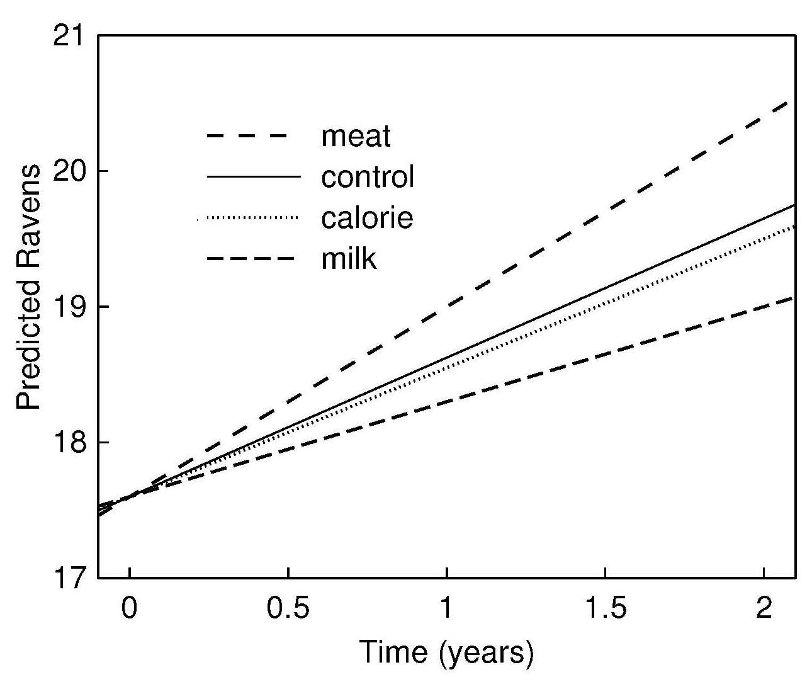
Figure 15.11. Longitudinal regression
curves for Raven's scores across five time points,
indicating improved cognition in some Kenyan children under
four different dietary regimes.
Data from Whaley et al., 2003, by permission of Oxford University Press.
Post-hoc analyses showed
that children who received a supplement with meat had
significantly greater gains on the Raven's Progressive
Matrices than any other group
(Whaley et al., 2003).
Mini-Mental State Examination (MMSE) is
the most studied instrument for use as a screening measure
of cognitive impairment in the elderly
(Lin et al., 2013).
The MMSE is divided into two parts and is not timed. The first part requires vocal responses only
and covers orientation, memory, and attention, with a maximum score of 21.
The second part tests the ability to name, follow verbal and written commands,
write a senetence spontaneously, and copy a complex polygon. This part has a maximum score of
9, giving a maximum total score of 30; for more details see Folstein and Folstein
(1975).
The MMSE was used to assess cognitive decline at six monthly
intervals in a 3y double-blind, placebo controlled
randomized controlled trial of
healthy postmenopausal African American women aged 65y and
older (n=260). Women were randomized to receive vitamin D
(adjusted to achieve a serum level > 30ng/mL) with calcium
(diet and supplement total of 1,200mg/d) or placebo (with
calcium supplement of 1,200mg/d). Over three years there
was no difference in cognition between the two groups,
providing no support in this trial for providing a vitamin D
intake greater than the recommended daily allowance for the
prevention of cognitive decline
(Owusu et al., 2019).
Other instruments such as the Clock
Drawing test (CDT), Mini-Cog, Memory
Impairment Screen, Abbreviated Mental Test (AMT),
and Short Portable Mental Status
Questionnaire (SPMSQ) can be used to detect
dementia, although with more limited
evidence. Moreover, for the AMT and SPMSQ,
evidence of their usefulness in English is limited
(Lin et al., 2013).
Motor development is also an
essential component of child development. In
several randomized controlled trials in
low income countries, positive effects on gross
motor milestones, particularly attainment
of walking unassisted have been reported in
infants receiving iron and/or zinc supplements or
micronutrient-fortified-complementary foods
(Adu-afarwuah et al., 2007; Black et al., 2004; Bentley et al., 1997 ; Masude and Chitundu, 2019).
Readers are advised to consult the WHO website for
details of the The Motor Development Study
undertaken as a component of the WHO
Multicenter Growth Reference Study.
(MGRS).
During this longitudinal study, data were collected
from five countries (Ghana, India, Norway,
Oman, and the United States) on six gross motor milestones
using standardized testing procedures. The gross motor
milestones and their performance criteria are outlined in Box 15.9:
see Wijnhoven et al.
(2004).
for further details on the
methods and training and standardization of
fieldworkers. Because achievements of the six milestones
were assessed repeatedly between 4–24mos, the sequence and tempo of the
milestones as well as the ages of their attainment can be documented
(Wijnhoven et al., 2004).
Use of these WHO data are recommended for future studies involving
assessment of gross motor development.
Box 15.9. MGRS performance
criteria for six gross motor milestones
Sitting without support: Child sits up straight with the head
erect for at least 10 seconds. Child does not use arms
or hands to balance body or support position.
Hands-and-knees crawling: Child alternately moves forward or
backward on hands and knees. The stomach does not
touch the supporting surface. There are
continuous and consecutive movements, at least three in a row.
Standing with assistance: Child stands in upright position on
both feet, holding onto a stable object (e.g., furniture)
with both hands without leaning on it.
The body does not touch the stable object, and
the legs support most of the body weight.
Child thus stands with assistance for at least 10 seconds.
Walking with assistance: Child is in upright position with the
back straight. Child makes sideways or forward steps
by holding onto a stable object (e.g., furniture)
with one or both hands. One leg moves
forward while the other supports part of the
body weight. Child takes at least five steps in this manner.
Standing alone: Child stands in upright position on both feet
(not on the toes) with the back straight. The
legs support 100% of the child’s weight.
There is no contact with a person or object.
Child stands alone for at least 10 seconds.
Walking alone: Child takes at least five steps independently in upright position with the back straight.
One leg moves forward while the other supports most of the body weight. There is no contact
with a person or object.
15.4.9 Depression
Links between depression and micronutrient deficiencies have
been reported for folate, vitamin B12, calcium, magnesium,
iron, selenium, zinc, and n‑3 fatty acids. Several
mechanisms have been proposed, including mitochondrial
function (including inadequate energy), disturbances in
normal metabolism, genetic polymorphisms requiring increased
or atypical nutrient requirements, increased inflammation,
oxidative stress, and alterations in the microbiome
(Campisi et al., 2020).
Of the micronutrients, those most frequently
studied have been zinc, vitamin D, iron,
folate, and vitamin B12 in investigations in children, adolescents and the
elderly. There have been reports of improvements in
patients with depression given supplemental zinc, especially
when the supplemental zinc is used as an adjunct to
conventional antidepressant drug therapy
(Ranjbar et al., 2014).
However, methodological limitations exist in some of
the studies, especially those on children and adolescents,
and more well-designed and adequately powered
placebo-controlled randomized controlled trials are needed
(Campisi et al., 2020).
Beck Depression Inventory-II (BDI-II) is frequently used to measure depression
(Richter et al., 1998; Levis et al., 2019).
This instrument is said to be
a cost-effective questionnaire with a high reliability and
capacity to discriminate between depressed and non-depressed
individuals and which is applicable to both research and
clinical practice worldwide
(Wang and Gorenstien, 2013).
Patient Health Questionnaire (PHQ) is
a useful screening tool to detect major
depression in population-based studies. Depression can be
defined with PHQ‑9 by using a cutoff point of 10 or above
regardless of age, although specificity of the PHQ‑9 may be
less for younger than for older patients
(Levis et al., 2019).
15.5 Factors affecting choice of nutritional biomarkers
Biomarkers should be selected with care, and their
limitations under conditions of health, inflammation,
genetic and disease states understood. Several biological factors must
be taken into account when selecting nutritional biomarkers
to assess nutritional status and these are discussed more fully in the
following sections. They are also affected by non-biological
sources of variation arising from specimen collection and
storage, seasonality, time of day, contamination, stability,
and laboratory quality assurance. Both the biological and
non‑biological sources of variation will impact on the
validity, precision, accuracy, specificity, sensitivity, and
predictive value of the biomarker. Because almost all
techniques are subject to both random and systematic
measurement errors, personnel should use calibrated
equipment and should be trained to use standardized and validated
techniques which are monitored continuously by appropriate
quality-control procedures.
15.5.1 Study objectives
The choice of nutritional biomarkers is strongly influenced
by the study objectives.
Nutritional biomarkers can be used to determine the
health impacts of nutritional status at the population
and/or the individual level. At the population level, factors
such as cost, technical and personnel requirements,
feasibility, and respondent burden are important
considerations when choosing biomarkers. Population-level
assessment is used to develop programs such as surveillance,
to identify populations or sub-groups at risk, to monitor and
evaluate public health programs, and to develop evidence-based
national or global policies related to food, nutrition, and
health.
Nutritional biomarkers are also used at the individual level
by clinicians to assess the nutritional status of patients
who are “apparently healthy” or “apparently sick”, or who have
subclinical illnesses. They may also be used to predict the
future risk of disease or long-term functional outcomes if
abnormal values persist, and to generate data to support
evidence-based clinical guidelines
(Combs et al., 2013).
The effects of genetic polymorphisms on the
clinical usefulness of biomarkers are increasingly being recognized;
see Section 15.7.1.
for more details.
Whether the study is at the population or individual level
can influence, for example, the choice of a biomarker of
nutritional exposure. To determine the risk of nutrient
inadequacy in a national survey, a single 24hr recall per
person (with repeats on at least a subsample) is required so that
the distribution of usual intakes can be adjusted
statistically. To assess the usual dietary intakes
of a patient for dietary counseling, a food frequency
questionnaire or dietary history is often used. For more
details of these dietary assessment methods, see Chapter 3.
15.5.2 Population and setting
Factors such as life-stage group and ethnicity must also be
taken into account when selecting nutritional biomarkers.
In studies during early infancy, local or national ethics committees may
prohibit the collection of venipuncture blood samples, and instead
suggest that less invasive biomarkers based on urine, saliva, hair, or
fingernails are used. Hormonal changes during
pregnancy, along with an increase in plasma volume
during the second and third trimester
affect concentrations of several micronutrient biomarkers (e.g.,
serum zinc and vitamin B12), making it essential to
identify women who are pregnant in order to ensure the correct
interpretation of biomarker values.
Rural settings may present many challenges associated with
the appropriate collection, transport, centrifugation and
storage of biomarkers; for example, it may be
difficult to ensure a temperature-controlled
supply chain or “cold chain” for specimen collection.
Increasingly, serum retinol binding protein (RBP) is being used as
a surrogate for serum retinol in studies at the population
level. As noted earlier, serum RBP is more stable, and the assay is easier, cheaper, and correlates closely with serum retinol, provided
that the individuals tested are neither obese nor have abnormal kidney function
(Tanumihardjo et al., 2016).
15.5.3 Validity
Validity refers to how well the biomarker
correctly describes the nutritional parameter of interest.
As an example, if the biomarker selected reflects recent
dietary exposure, but the study objective is to assess the
total body store of a nutrient, the biomarker is said to be
invalid. In U.S. NHANES I, thiamin and riboflavin were analyzed
on casual urine samples because it was not practical to
collect 24h urine specimens. However, results were not
indicative of body stores of thiamin or riboflavin, and
hence were considered invalid and thus not included in
U.S. NHANES II or U.S. NHANES III
(Gunter and McQuillan, 1990).
Valid biomarkers are ideally free from random and systematic
errors and are both sensitive and specific.
Unfortunately the action of inflammation, stress, or
certain medications,on enzyme activity and nutrient
metabolism may alter nutrient status and thus affect the
validity of a nutritional biomarker. As an example, the
acute-phase response observed during an infectious illness
may cause changes in certain nutrient levels in the blood
(e.g., plasma zinc may fall and retinol binding protein fall, whereas plasma ferritin increases), that do not reflect
alterations in the nutrient status per se, but indicate instead a
redistribution of the nutrient mediated by the release of
cytokines
(Raiten et al., 2015).
In view of the possible effects of inflammation on biomarker
levels, measures of infection status should be assessed
concurrently. For example, to adjust for the presence of
systemic inflammation, WHO has recommended the concurrent
measurement of two inflammatory biomarkers — serum
C‑reactive protein and α‑1‑acid glycoprotein —
so that an adjustment using regression modeling can be applied
(Suchdev et al., 2016).
Table 15.5 shows, for
Indonesian infants at 12mos, the
impact of inflammation on the geometric
mean and prevalence estimates of iron,
vitamin A, and zinc deficiency based on serum ferritin, RBP, and zinc.
Note the decrease in geometric mean for serum ferritin
but the corresponding increases for serum RBP and zinc
after applying the recommended
BRINDA adjustment for inflammation. As a
consequence, there is a marked increase in the estimated proportion at
risk to low serum ferritin (indicative of depleted iron
stores), and a marked decrease in the estimate of prevalence of both
vitamin A deficiency and zinc deficiency
Table 15.5
Table 15.5. Impact of inflammation on micronutrient
biomarkers of Indonesian infants
of age 12mos. From Diana et al.(2018).
* Ferritin < 12µg/L
** RBP < 0.83µmol/L
*** Zinc < 9.9µmol/L
Biomarker in serum
Geometric mean (95% CI)
Proportion at risk (%)
Ferritin*: No adjustment
14.5 µg/L (13.6–17.5)
44.9
Ferritin: Brinda adjustment
8.8 µg/L (8.0–9.8)
64.9
Retinol binding protein**: No adjustment
0.98 (µmol/L) (0.94–1.01)
24.3
Retinol binding protein: Brinda adjustment
1.07 µmol/L (1.04–1.10)
12.4
Zinc***: No adjustment
11.5 µmol/L (11.2–11.7)
13.0
Zinc: Brinda adjustment
11.7 µmol/L (11.4–12.0)
10.4
Other disease processes
may alter the nutrient status as a result of impaired
absorption, excretion, transport, or conversion to the
active metabolite and thus confound the validity of the
chosen biomarker. In some cases the cause of these disease processes is hereditary,
but in other cases the cause is acquired. Some examples of disease processes
that affect nutrient status and, in turn, nutritional
biomarkers, are shown in
Table 15.6.
Table 15.6. Examples of some disease states that may confound the validity of laboratory tests. In: Biochemical markers of nutrient status. In:
Margetts BM, Nelson M (eds.) Design Concepts in
Nutritional Epidemiology, 2nd ed.
Disease
Biomarkers of nutrient indices that may be altered (usually lowered)
Pernicious anemia
Vitamin B12 (secondary effect on folate)
Vitamin-responsive metabolic errors
Usually B‑vitamins (e.g., vitamins B12, B6, riboflavin, biotin, folate)
Tropical sprue
Vitamins B12 and folate (local deficiencies); protein
Steatorrhea
Fat-soluble vitamins, lipid levels, energy
Abetalipoproteinemia
Vitamin E
Thyroid abnormality
Riboflavin, iodine, selenium, lipid levels, energy
Diabetes
Possibly vitamin C, zinc, chromium, and several other nutrients; lipid levels
Infections, inflammation, acute
phase reaction
Zinc, copper, iron, vitamin C, vitamin A, lipids, protein, energy
Increased retention or increased loss of many circulating nutrients, lipid levels, protein
Cystic fibrosis
Especially vitamin A, lipid levels, protein
Various cancers
Lowering of vitamin indices
Acute myocardial infarction
Lipid levels affected for about 3 mo
Malaria, hemolytic disease, hookworm, etc
Iron, vitamin A, lipid
Huntington's chorea
Energy
Acrodermatitis enteropathica; various bowel, pancreatic, and
liver diseases
Zinc, lipid levels, protein
Hormone imbalances
Minerals, corticoids, parathyroid hormone, thyrocalcitonin (effects on the
alkali metals and calcium), lipid levels affected by oral contraceptive
agents and estrogen therapy
Depending on the biomarker, potential interactions with
several physiological factors such as fasting status,
diurnal variation, time of previous meal consumption and
homeostatic regulation must also be considered. For
instance, fluctuations in serum zinc in response to meal
consumption can be as much as 20%
(King et al., 2015).
15.5.4 Precision
Precision refers to the degree to which repeated
measurements of the same biomarker give the same value. The
precision of a nutritional biomarker is assessed by repeated
measurements on a single specimen or individual. The
coefficient of variation (CV), as determined by the ratio of
the standard deviation to the mean of the replicates
(SD/mean × 100%) is the best quantitative measure of the
precision. Ideally, the CV should be calculated for specimens
at the bottom, middle, and top of the reference
concentration range for the biomarker, as determined on
apparently healthy individuals. These same specimens then serve as
quality controls.
Typically, the quality-control specimens used to calculate the
CV are pooled samples from donors similar to the study
participants. It is important that these
quality-control specimens should, to the analyst, appear identical to the
specimens from the study participants. This means that the
same volume, type of vial, label and so on should be used.
Quality-control specimens should be inserted blind into each
batch of specimens from the study participants. Both the
intra- and inter-run CVs should be calculated on
these quality-control specimens. The former is calculated
from the values for aliquots of the quality-control specimens
analyzed within the same batch, and the latter normally calculated from the values for aliquots of the
quality-control specimens analyzed on different days
(Blanck et al., 2003).
The precision of the measurement of a biomarker is in part a
function of the random measurement errors that occur during
the actual analytical process, and in some cases also a function of the
intra-individual biological variations that occur naturally
over time. The relative importance of these two sources of
uncertainly varies with the measurement. For some
biochemical measurements (e.g., serum iron),
the intra-individual biological variation
is quite large: coefficients of
variation may exceed 30%, and be greater than any analytical
variation. Consideration of intra-individual variation is also
important when assessing dietary exposure, because nutrient
intakes of an individual always vary over time. However, in
this case, the intra-individual variation is a measure of the
“true day-to-day” variation in the dietary intake of an
individual. Strategies exist to account for the impact of
intra-individual variation on the measurement of true usual
intake of an individual — see chapter 6 for more details.
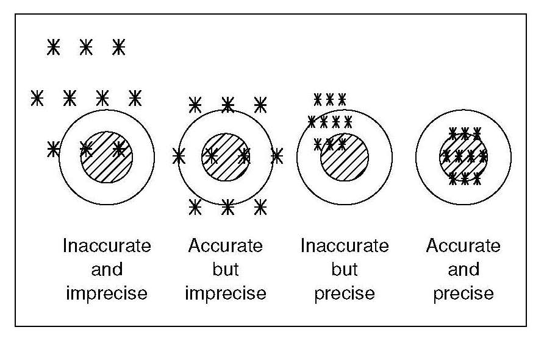
Figure 15.12. Differences between precision
and accuracy.
The attainable level of precision for the measurement of any
particular biomarker depends on the procedure, whereas the
required precision is a function of the study objectives.
Some investigators have stipulated that, ideally, the
analytical CV for an assay used in epidemiological studies
should not exceed 5%. In practice, this level of precision
is difficult to achieve for many assays and less precise measurements
in epidemiological studies may result in
a failure to detect a real relationship of the nutritional
biomarker and the outcome of interest
(Blanck et al., 2003).
Of note, as shown in Figure 15.12,
even if the precision is acceptable, the
analytical method may not be accurate.
15.5.5 Sensitivity and specificity
Sensitivity refers to the extent to which the biomarker
identifies individuals who genuinely have the condition
under investigation (e.g., a nutrient deficiency state). Sensitive biomarkers
show large changes as a result of only small changes in
nutritional status. A biomarker with 100% sensitivity
correctly identifies all those individuals who are genuinely
deficient; no individuals with the nutrient deficiency are
classified as “well” (i.e., there are no false negatives).
Numerically, sensitivity is the proportion of individuals
with the condition who have positive tests (true positives)
divided by the sum of true positive and false negatives.
The sensitivity of a biomarker changes with the prevalence
of the condition as well as with the cutoff point.
Biomarkers that are strictly homeostatically controlled have
very poor sensitivity. Figure 15.1 shows the relationship
between mean plasma vitamin A and liver vitamin A
concentrations. Note that plasma retinol concentrations
reflect the vitamin A status only when liver vitamin A
stores are severely depleted (< 0.07µmol/g liver) or
excessively high (> 1.05µmol/g liver).
When liver vitamin A
concentrations are between these limits, plasma retinol
concentrations are homeostatically controlled and levels
remain relatively constant and do not reflect total body
reserves of vitamin A. Hence, in populations from higher
income countries where liver vitamin A concentrations are
generally within these limits, the usefulness of plasma
retinol as a sensitive biomarker of vitamin A exposure and
status is limited
(Tanumihardjo et al., 2016).
Likewise, the use of serum zinc as a biomarker of exposure or status
at the individual level is limited due to tight homeostatic
control mechanisms. Based on a recent meta-analysis,
doubling the intake of zinc was shown to increase plasma
zinc concentrations by only 6%
(King, 2018).
Specificity refers to the ability of a nutritional biomarker
to identify and classify those persons who are genuinely
well nourished. If the biomarker has 100% specificity, all
genuinely well-nourished individuals will be correctly
identified; no well-nourished individuals will be classified
as under-nourished (i.e., there are no false positives). Numerically,
specificity is the proportion of individuals without the
condition who have negative tests (true negatives divided by
the sum of true negatives and false positives).
Unfortunately, many of the
health and biological factors noted in Box 15.2 and
diseases summarized in Table 15.6 reduce the
specificity of a biomarker. Inflammation, for example,
reduces serum zinc (Table 15.5), yielding a
concentration that does not reflect true zinc status, so
misclassification occurs; individuals are designated “at
risk” with low serum zinc concentrations when they are
actually unaffected (false positives). In contrast,
inflammation increases serum ferritin, so that in this case
individuals may be designated “not at risk” when they are
truly affected by the condition (false negatives).
The ideal biomarker has a low number of both false positives
(high specificity) and false negatives (high sensitivity),
and hence is able to completely separate those who genuinely
have the condition from those individuals who are healthy.
In practice, a balance has to be struck between specificity
and sensitivity, depending on the consequences of
identifying false negatives and false positives.
15.5.6 Analytical sensitivity and analytical specificity
Unfortunately, the term “sensitivity” is also used to
describe the ability of an analytical method to detect the
substance of interest. The more specific term “analytical sensitivity”
should be used in this context.
For any analytical method, the smallest concentration that
can be distinguished from the blank is termed the
“analytical sensitivity” or the “minimum detection limit.”
The blank should have the same matrix as the test sample
and, therefore, usually contains all the reagents but none
of the added analyte. Recognition of the analytical
sensitivity of a biochemical test is particularly important
when the nutrient is present in low concentrations (e.g.,
the ultra-trace elements Cr, Mn, and Ni).
In practical terms, the minimum detection limit or the
analytical sensitivity is best defined as three times the
standard deviation (SD) of the measurement at the blank
value. To calculate the SD of the blank value, 20 replicate
measurements are generally recommended. Routine work should
not include making measurements close to the detection limit
and should normally involve analyzing the nutrient of
interest at levels at least five times greater than the
detection limit. Measured values at or below the detection
limit should not be reported.
The ability of an analytical method to measure exclusively
the substance of interest is a characteristic referred to as
the “analytical specificity.” Methods that are
nonspecific generate false-positive results because of
interferences. For example, in U.S. NHANES II, the radioassay
used gave falsely elevated results for vitamin B12. This
arose because the porcine intrinsic factor (IF) antibody
source initially used reacted both with
vitamin B12 and with nonspecific cobalamins present in
serum. As a result, erroneously high concentrations were
reported and the samples had to be reanalyzed using a
modified method based on purified human IF, specific for
vitamin B12
(Gunter and McQuillan, 1990).
Strategies exist to enhance analytical specificity (and
sensitivity). Examples include the use of dry ashing or wet
digestion to remove organic material prior to the analysis
of minerals and trace elements.
15.5.7 Analytical accuracy
The difference between the reported and the true amount of
the nutrient/metabolite present in the sample is a measure
of the analytical accuracy (“trueness”) of the laboratory
test (Figure 15.12). Guidelines on choosing a laboratory
for assessment of a nutritional biomarker are given in Blanck et al.
(2003).
Several strategies can be used to ensure that analytical
methods are accurate. For methods involving direct analysis
of nutrients in tissues or fluids, a recovery test is
generally performed. This involves the addition of known
amounts of nutrient to the sample. These spiked samples are
then analyzed together with unspiked aliquots to assess
whether the analytical value accounts for close to 100% of
the added nutrient.
As an additional test for accuracy, aliquots of a reference
material, similar to the sample and certified for the
nutrient of interest, should be included routinely with each
batch of specimens. If possible, several reference
materials, with values spanning the range observed in the
study samples, should be analyzed
(Blanck et al., 2003).
Such a practice will document the accuracy achieved.
Standard reference materials (SRMs) can be obtained from the U.S.
National Institute of Standards and Technology
(NIST) (for
serum Zn, vitamins B6 and B12, folate, vitamin D, carotenoids), the
U.S. Centers for Disease Control and Prevention (CDC) (for
serum vitamins A and C), the International Atomic Energy
Authority
(IAEA) in Vienna, the Community Bureau of
Reference of the Commission of the European Communities
(BCR) in Belgium (serum proteins), and the U.K. National
Institute of Biological Standards and Controls (serum
ferritin, soluble transferrin receptor). A reference
material for erythrocyte enzymes for vitamin B6,
riboflavin, and thiamin is also available from the Wolfson
Research Laboratory, Birmingham, England.
The importance of the use of SRMs is highlighted by the
discrepancies in serum folate and red blood cell folate
based on the radioprotein-binding assay (RPBA)
and a microbiological assay. By using the newly available
SRM for folate, U.S. NHANES established that values
based on the RPBA assay were
25–40%
lower for serum folate and 45% lower for red blood cell
folate compared to both the microbiological method and that
using liquid chromatography-tandem mass spectrometry.
Because most of the cutoffs to assess the adequacy
of folate status were established using the RPBA assay,
applying such mismatched cutoffs for the microbiological assay resulted in
risks of folate deficiency which were markedly higher (i.e., 16% vs 5.6% for
serum folate and 28% vs. 7.4% for RBC folate)
(Pfeiffer et al., 2016).
These data emphasize the
importance of using accurate analytical methods and applying
method-specific cutoffs to avoid misinterpretation of the
data
(MacFarlane, 2016).
If suitable reference materials are not available, aliquots
from a single homogeneous pooled test sample should be
analyzed by several independent laboratories using different
methods. Programs are available which compare the
performance of different laboratories in relation to
specific analytical methods. Some examples include the
programs operated by
IAEA,
the Toxicology Centre in Québec,
Canada, and the U.S. National Institute of Standards and Technology
(NIST).
Important differences distinguish assays undertaken by a
hospital clinical laboratory from those completed during a
survey or research study. Clinical laboratories often focus
on values for the assay that are outside the normal range,
whereas in nutrition surveys such as U.S. NHANES III), and in research
studies, the emphasis is often on concentrations that fall
within the normal range. This latter emphasis requires an
even more rigorous level of internal laboratory quality control
(Potischman, 2003).
Box 15.10 U.S. NHANES III laboratory quality-control
procedures
Bench quality-control pools for each analyte, at multiple
concentration levels
Blind quality-control pools for each analyte, low-normal
and high-normal levels
Random re-analysis of 5% of specimens for each method
Split-duplicates from one original specimen submitted from
the mobile examination center
Re-collection from sample participants to
provide two observations for comparison of values
External proficiency testing for many analytes, such as
the College of American Pathologists, New York State,
CDC‑Wisconsin programs.
Where possible, it is preferable for all specimens to be
analyzed in a single batch to reduce between-assay
variability. This is not always feasible: in such cases, an
appropriate number of controls should be included in each
batch of samples. Box 15.10 highlights the
procedures adopted in U.S. NHANES III to ensure analytical
accuracy
(Gunter and McQuillan, 1990).
Most clinical chemistry laboratories are required to belong
to a certified quality assurance program. The U.S. CDC
operates a National Public Health Performance Standards Program
(NPHPSP),
designed to improve the quality of public health
practice and performance of public health systems,
particularly statewide assessments.
15.5.8 Predictive value
The predictive value describes the ability of a nutritional
biomarker, when used with an associated cutoff, to predict
correctly the presence or absence of a nutrient deficiency
or disease. Numerically, the predictive value of a
biomarker is the proportion of all results of the biomarkers
that are true (i.e., the sum of the true positives and true
negatives divided by the total number of tests). Because it
incorporates information on both the biomarker and the
population being tested, predictive value is a good measure
of overall clinical usefulness.
The predictive value can be further subdivided into the
positive predictive value and the negative predictive value.
The positive predictive value of a biomarker is the
proportion of positive biomarker results that are true (the
true positives divided by the sum of the true positives and
false positives). The negative predictive value of a
biomarker is the proportion of negative biomarker results
that are true (the true negatives divided by the sum of the
true negatives and false negatives). In other words, the
positive predictive value is the probability of a deficiency
state in an individual with an abnormal result, whereas the
negative predictive value is the probability of an
individual not having the condition when the biomarker
result is negative.
Sensitivity, specificity, and prevalence of the nutrient
deficiency or disease affect the predictive value of a
biomarker. Of the three, prevalence has the most influence
on the predictive value of a biomarker. When the prevalence
of the condition is low, even very sensitive and specific
biomarker tests have a relatively low positive predictive
value. In general, the highest predictive value is achieved
when specificity is high, irrespective of sensitivity.
15.5.9 Scoring criteria to select biomarkers
European researchers have developed a set of criteria which
can be used to select the appropriate biomarkers in
nutrition research
(Calder et al., 2017),
and these criteria are
shown in Box 15.11. Once the biomarker has been assessed by
applying these criteria, then the information obtained can
be used to score the biomarker to determine its usefulness.
Details of the proposed scoring system are given in Calder et al.
(2017).
Box 15.11. Scoring criteria to select biomarkers
Methodological aspects, excluding study design
Method should be validated according to
recognized guidelines
Appropriate sensitivity
Appropriate specificity
Reproducibility, accuracy, standardization,
stability (quality of sample) and technical variation
Biological variation
Reflects/marks the biological purpose of the biomarker
A change in the
biomarker is linked with a change in the endpoint in one or
more target populations
Method should be validated
according to recognized guidelines
Relevance to nutrition research
What is
considered as a normal range for healthy people?
What is a significant change (consider both biological and
statistical)?
Is there evidence that nutrition influences
the marker? If so, what is the size of the effect reported?
Which other factors also have an effect on the biomarker (if any)
Are there experimental
data where dietary intervention has not resulted in an
anticipated change?
In general, a combination of biomarkers should be used where
possible rather than a single biomarker for each nutrient;
several concordant abnormal values are more reliable than a
single aberrant value in diagnosing a deficiency state.
Table 15.7
Table 15.7. The recommended biomarkers for six micronutrients of public health
importance. RBC: red blood cell; DBS: dried blood spot; holoTC:
holo-trans-cobalamin; MBA method: microbiological method. The information
in this table is drawn from six “Biomarkers of Nutrition for Development Reviews”
(Folate, Iodine,Iron, Vitamin A, Vitamin B12, Zinc).
Nut- rient
Biomarkers of Exposure
Biomarkers of status
Functional biomarkers*
Adverse Clinical outcomes
Folate
Dietary folate equivalents
Serum folate; RBC
folate: MBA method
Plasma homocysteine
Megaloblastic anemia
Iodine
Salt iodine
Urinary iodine
Thyroglobulin
Goitre
Iron
Bioavailable iron intakes
Ferritin; RBC proto-porphyrin;
transferrin receptor; body Iron index
Currently no biomarker of
brain Fe deficiency
Microcytic, hypochromic anemia
Vitamin A
Dietary vitamin A as retinol activity
equivalents (RAE)
Retinol in plasma, DBS, & breast milk;
Retinol binding protein in plasma or DBS
Modified relative dose
response Dark adaptation Pupillary threshold test
Xeropthalmia
Night blindness
Vitamin B12
Dietary B12 intake
Serum B12; Serum holoTC
Serum methyl- malonic acid. Plasma homo- cysteine
Megaloblastic anemia
Zinc
Dietary Zn intakes; Absorbable Zn
Serum zinc
Impaired linear growth
Stunting
summarizes the biomarkers recommended
by the BOND Expert Panels for the
assessment of the six micronutrients (folate, iodine, iron,
vitamin A, vitamin B12, zinc) of public health importance
in low- and middle-income countries (LMICs).
15.6 Evaluation of the selected nutritional biomarker
At the population level, nutritional biomarkers
are often used for surveys, screening,
surveillance, monitoring, and evaluation (Box 15.1), when
they are evaluated by comparison with a distribution of
reference values from a reference sample group
(if available) using percentiles or
standard deviation scores.
Alternatively, individuals in
the population can be classified as “at risk” by
comparing biomarker values with either statistically
predetermined reference limits drawn from the reference
distribution, or with clinically or functionally defined “cutoff
points”. At the population level, the biomarkers do not
necessarily provide certainty with regard to the status of
every individual in the population. In contrast, when using
biomarkers for the diagnosis, treatment, follow-up, or
counseling of individual patients, their evaluation needs to
be more precise, with cut-offs chosen accordingly
(Raghaven et al., 2016).
Note that
statistically defined “reference limits” are technically
not the same as clinically or functionally defined
“cutoffs”, and the two terms should not be used
interchangeably.
15.6.1 Reference distribution
Table 15.8. Selected percentiles for hemoglobin (g/dL)
and transferrin saturation (%) for male subjects (all
races)
20–64y. Percentiles are for the U.S. NHANES II
“reference population”. Abstracted from
Pilch and Senti, 1984.
Males
hemoglobin percentiles (g/dL)
Age (y)
5
10
25
50
75
90
95
20–44
13.7
14.0
14.6
15.3
15.9
16.5
16.8
45–64
13.5
13.8
14.4
15.1
15.8
16.4
16.8
Males
Transferrin saturation percentiles (%)
Age (y)
5
10
25
50
75
90
95
20–44
16.6
18.4
23.3
29.1
35.9
43.7
48.5
45–64
15.2
17.6
21.8
27.8
34.2
39.7
44.4
Normally, evaluation at the population level requires a
distribution of reference values obtained from a
cross-sectional analysis of a reference sample group.
Theoretically, only healthy persons free from conditions
known to affect the status of the nutrient under study are
included in the reference sample group. For example, a
distribution of reference values for hemoglobin (by age,
sex, and race) was compiled from
the U.S. NHANES II based on a
sample of healthy, non-pregnant individuals.
Participants with conditions known to affect iron status,
such as pregnant women and those who had been pregnant in
the preceding year, those with white blood cell count
< 3.4×109/L
or > 11.5×109/L,
with protoporphyrin > 70µg/dL red blood
cells, with transferrin saturation < 16%, or with a mean
corpuscular volume < 80.0 or > 96.0fL, were excluded
Pilch and Senti, 1984. Table 15.8
shows the percentiles for
hemoglobin and transferrin saturation for male subjects (all
races) aged
20–64y, drawn from the U.S. NHANES II healthy
reference sample
Pilch and Senti, 1984.
A more
detailed discussion of the selection criteria for a reference sample group can be found in Ichihara et al.
(2017).
These distributions can be used as a standard
for comparison with the hemoglobin distributions from other
study population surveys.
As an example, if anemia is present in the study population,
the hemoglobin distribution will be shifted to the left, as
shown in the school-aged children from Zanzibar when
compared to the optimal hemoglobin distribution for the
U.S. NHANES II reference population of healthy African American
children in
Figure 15.13.
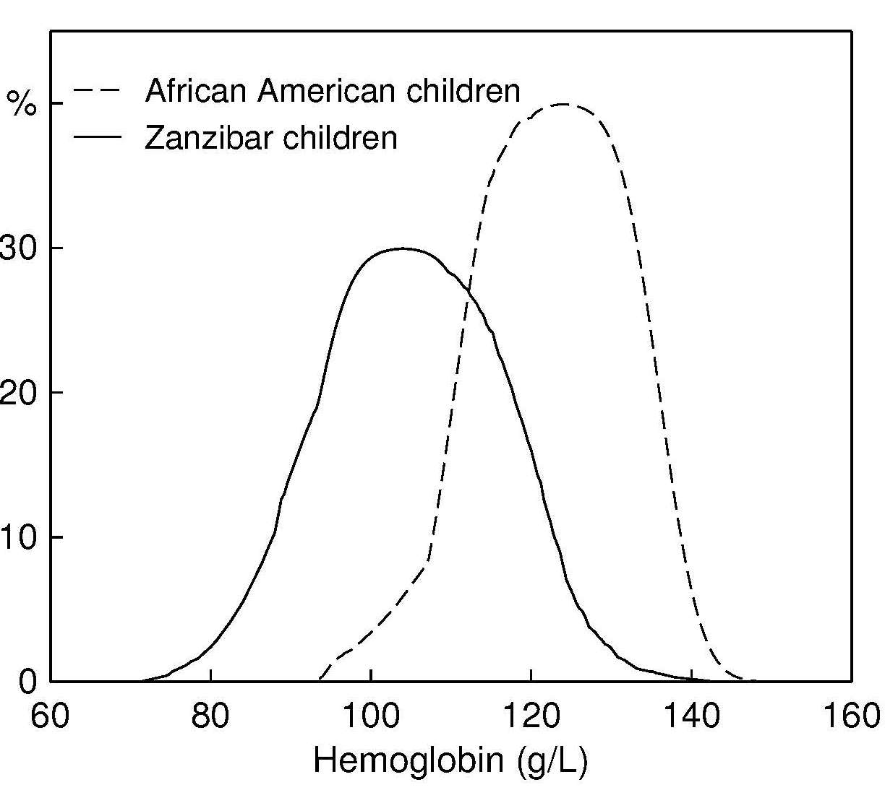
Figure 15.13.
Distribution of hemoglobin in a reference
population of African American children with
no biochemical signs of iron deficiency and school-age
children from Zanzibar. Redrawn from
Yip et al., 1996.
Distributions of serum zinc concentrations from the
U.S. NHANES II survey based on a healthy reference sample
(Pilch and Senti, 1984)
were developed by Hotz et al.
(2003).
Data for individuals with conditions known to significantly
affect serum zinc concentrations were excluded,i. e., those
with low serum albumin (< 35g/L), those with an elevated white blood
cell count (> 11.5×109/L), and those using oral contraceptive agents,
hormones or steroids, or experiencing diarrhea. The
International Zinc Consultative Group (IZiNCG) also took
age, sex, fasting status (i.e., > 8h since last meal),
and time of day of the blood sample collection into account,
in the reanalysis. From these data, distributions of
reference values for serum zinc (by age, sex, fasting status
and time of sampling) were compiled.
Unfortunately, none of the other biochemical data generated
from U.S. NHANES II or U.S. NHANES III have been treated in this way
(Looker et al., 1997).
As a consequence, and in practice, the
reference sample group used to derive the values for the
reference distribution is usually drawn from the “apparently
healthy” general population sampled during nationally
representative surveys and assumed to be disease-free. For
example, Ganji and Kafai
(2006)
compiled population
reference values in this way for plasma homocysteine concentrations for
U.S. adults by sex and age in non-Hispanic whites,
in non-Hispanic blacks, in Mexican Americans and in Hispanic subjects
using data from U.S. NHANES
1999–2001 and
2001–2002.
15.6.2 Reference limits
The reference distribution can also be used to statistically derive
reference limits and also to derive a reference interval.
Two reference limits are often defined, and the interval
between and including them is termed the “reference
interval”. On average,
120 “healthy” individuals are needed
to generate the reference limits for subgroups within
strata such as age group, sex, and possibly race
(Lahti et al., 2002).
The reference interval usually includes the
central 95% of reference values, and is often termed the
“reference range” or “range of
normal”, with the lower 2.5th
percentile value often corresponding to the lower reference
limit and the upper 2.5th percentile value to the upper
reference limit. For example, the reference limit
determined by IZiNCG was based on the 2.5th percentile of
serum zinc concentrations for males and females aged < 10y
and ≥ 10y, qualified by fasting status and time of blood collection
(Hotz et al., 2003).
Similarly, in the U.K. national
surveys, the lower reference limit for hemoglobin was
represented by the 2.5th percentile qualified by age and sex. The
number and percentage of individuals with observed values
falling below the 2.5th percentile value can then be calculated.
Box 15.12 depicts the relationship between reference
values, the reference distribution, and reference limits,
and how reference samples are used to compile these values.
Observed values for individuals in the survey are classified
as “unusually
low”, “usual”, or “unusually high”, according
to whether they are situated below the lower reference
limit, between or equal to either of the reference limits,
or above the upper reference limit.
Box 15.12. The relationship between the reference
population, the reference distribution, and reference limits
REFERENCE INDIVIDUALS
↓ make up a
REFERENCE population
↓ from which is selected a
REFERENCE SAMPLE GROUP
↓ on which are determined
REFERENCE VALUES
↓ on which is observed a
REFERENCE DISTRIBUTION
↓ from which are calculated
REFERENCE LIMITS
↓ that may define
REFERENCE INTERVALS
From IFCC (1987).
Unfortunately, no data are available from national nutrition
surveys for the distribution of reference values for most
functional physiological biomarkers
(e.g., relative dose-response for
vitamin A) with the exception of child growth
(de Onis et al, 2008),
and six child gross motor milestones
(MGRS, 2004).
and for behavioral biomarkers (e.g., cognition;
depression). Use of such biomarkers
(with the exception of growth) is generally not feasible in
large-scale nutrition surveys. Consequently, these
functional biomarkers are often evaluated by monitoring
their improvement serially,
during a nutrition intervention program.
Alternatively, observational studies have examined correlations
between a static or functional biomarker of a nutrient
and a physiological or behavioral biomarker.
These observational studies have comprised
cross-sectional, case-control, and cohort studies.
The observed values may also be compared
using cutoff points as described below.
15.6.3 Cutoff points
Cutoff points, unlike statistically defined reference
limits, are based on the relationship between a nutritional
biomarker and low body stores, functional impairment or
clinical signs of deficiency or excess
(Raghavan et al., 2016).
The Institute of
Medicine (IOM) defines a cutoff for a biomarker as a “specified quantitative measure used to demarcate the
presence or absence of a health-related condition often used
in interpreting measures obtained from analyses of blood” (IOM, 2010)
.
The use of cut-off points is less frequent than that of
reference limits because information relating biomarkers and
functional impairment or clinical signs of deficiency or
excess is often not available. Cutoff points may vary with
the local setting because relationships between the
biomarkers and functional outcomes is unlikely to be the
same from area to area.
Cutoff points, like reference limits, are often age-, race-,
or sex-specific, depending on the biomarker. For biomarkers
based on biochemical tests, cutoff points must also take
into account the precision of the assay. Poor precision
leads an overlap between those individuals classified as having low or deficient values
with those having normal values and thus to
misclassification of individuals. This affects the
sensitivity and specificity of the test. The International
Vitamin A Consultative Group (IVACG), for example, now
recommends the use of HPLC for measuring serum retinol
concentrations because this is the best method for detecting
concentrations < 0.70µmol/L with adequate precision
(Tanumihardjo et al., 2016).
The BOND Expert Panel has
recommended cutoffs for the biomarkers of exposure, status,
or function for six micronutrients — folate, iodine, iron,
vitamin A, vitamin B12 and zinc, although for some (e.g.,
serum zinc), the so-called cutoffs are in fact statistically
defined and hence are actually reference limits.
Note that in some cases, the so-called cutoffs for status
or functional biochemical biomarkers are assay-specific,
as discussed earlier for folate. Assay-specific cutoffs
are also available for soluble transferrin receptor, a
useful biomarker for identifying
iron deficiency because it is less strongly affected
by inflammation. Assay-specific cutoffs arise when there
is no CRM available for the biomarker, as has been the issue for
folate and soluble transferrin receptor, until recently.
Different cutoff units are sometimes used, presenting an
additional challenge when interpreting data across laboratories
(Raghavan et al., 2016).
Table 15.9. Prevalence estimates of vitamin B12 deficiency
using different cutoffs for serum vitamin B12. From Raghavan et al.(2016).
Cutoffs. Serum vitamin B12 pmol/L
Prevalence estimates for
for vitamin B12 deficiency, %
< 148
2.9 ± 0.2
< 200
10.6 ± 0.4
< 258
25.7 ± 0.6
highlights how the use of differing cutoffs could affect the
prevalence of vitamin B12 deficiency in a sample
of U.S. elderly people (at least 60y) participating in
the U.S. NHANES surveys,
with estimates ranging from 3% to 26% (Yetley et al., 2011).
This means that in population studies, prevalence estimates for
deficiency can vary according to the cutoff applied, which
has implications for nutrition public policy, and which may result
in unwarranted clinical interventions. In some cases,
cutoff points for a nutritional biomarker vary according to
the functional outcome of interest. In the elderly, for
example, maximum muscle function has been associated with
25-OH-D levels > 65nmol/L, whereas reduction in
fracture risk is associated with higher serum 25-OH-D
levels
(Dawson-Hughes et al., 2008). Receiver operating characteristic (ROC) curves are used to
evaluate the ability of a nutritional
biomarker to classify individuals with the condition under investigation. The curves
portray graphically the trade-offs that occur in the sensitivity and
specificity of a biomarker when the cutoffs are altered. To
use this approach, a spectrum of cutoffs over the observed
range of biomarker results is used, and the sensitivity and
specificity for each cutoff calculated. Next, the
sensitivity (or true-positive) rate is plotted on the
vertical axis against the true negative rate
(1-specificity) on the horizontal axis for each cutoff, as shown in
Figure 15.14,
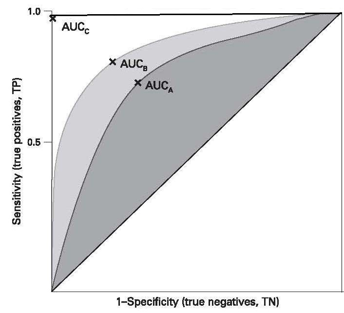
Figure 15.14.
Receiver-operating characteristic curves. Three plots
and their respective areas under the
curve (AUC) are given. The diagnostic accuracy of marker C
(white area) is better than that of B and
A, as the AUC of C > B > A. X = point of best cut-off for the biomarker.
From: Søreide, 2009, with permission of the BMJ Publishing Group Ltd.
The closer the curve
follows the left-hand border and then the top-border of the
ROC space, the more accurate is the biomarker cutoff in
distinguishing a deficiency from optimal status. The
optimal ROC curve is the line connecting the points highest
and farthest to the left of the upper corner. The closer
the curve comes to the 45° diagonal of the ROC space,
the less accurate the biomarker cutoff
(Søreide, 2009).
Most statistical programs (e.g., SPSS) provide ROC curve analysis.
The area under the ROC curve (AUC), also known as the
cut-point “c” statistic or c-index, is a commonly used
summary measure of the accuracy of the biomarker cutoff.
AUCs can range from 0.5 (random chance, or no predictive
ability — a 45° line on the ROC plot, Figure 15.4) to 0.75 (good),
and to > 0.9 (excellent). The cutoff
value that provides the highest sensitivity and specificity
is calculated. On the rare occasions that the estimated AUC
for the biomarker cutoff is < 0.5, then the biomarker cutoff
is worse than chance! When multiple biomarkers are
available for the same nutrient, the biomarker with the
highest AUC is often selected.
Youden index (J) is another summary statistic of
the ROC curve used in the interpretation and evaluation of
biomarkers. It defines the maximum potential effectiveness
of a biomarker. The statistic J can be defined as J = (maximum
sensitivity (c) + specificity (c) − 1). The cut-off that
achieves the maximum is referred to as the optimal cutoff (c*) because
it is the cut-off that optimizes the biomarker’s
differentiating ability when equal weight is given to
sensitivity and specificity. The statistic J can range from 0 to 1, with
1 indicating a perfect diagnostic test, whereas
values closer to 0 signify a limited effectiveness
(Schisterman et al., 2005; Ruopp et al., 2008).
Misclassification arises when there is overlap between individuals
who actually have the deficiency and those falsely identified
(i.e., false positives). Neither reference limits nor cutoff values can
separate the “deficient” and
the “adequately nourished” without some
misclassification occurring. This is shown in
Figure 15.15
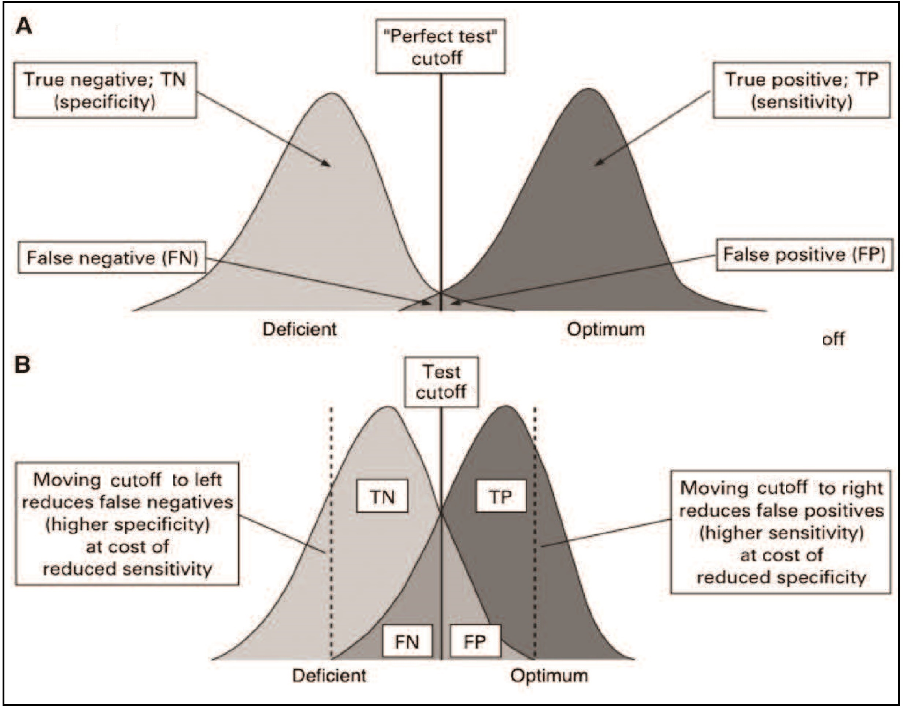
Figure 15.15. A good
discriminatory test with almost perfect ability to discriminate between people
with a nutrient deficiency and those with optimum nutrient
status. The ability to correctly detect all the true negatives
depends on the specificity of the biomarker; the ability to
correctly detect all the true positives depends on the
sensitivity of the biomarker. FN, false negative; FP, false
positive; TN, true negative; TP,true positive.
From: Raghaven et al.(2016), Reproduced by permission of Oxford University Press on behalf of the American Society for Nutrition.
for the real-life situation (B). Note that
the cut-offs finally selected can vary according to
whether the consequences of a high number of individuals
being falsely classified as positive is more or less important
than the consequences of a large number of individuals being
falsely classified as negatives. Minimizing either
misclassification may be considered more important than
minimizing the total number of individuals misclassified.
Note that the sensitivity can be improved (i.e., reducing
the false positives) by moving the cut-off to the right but
this reduces the specificity (false negatives), whereas
moving the cut-off to the left reduces the false negatives
(higher specificity) at the cost of a reduction in
sensitivity. The former scenario may be preferred for the
clinical diagnosis of a fatal condition, whereas cut-offs
with a high specificity may be preferred for diagnostic
tests that are invasive or expensive.
Misclassification arises because there is always biological
variation among individuals (and hence in the physiological
normal levels defined by the biomarker), depending on their
nutrient requirements. As well, for many biomarkers there
is high within-individual variance, which influences both the
sensitivity and specificity of the biomarker, as well as the
population prevalence estimates. These estimates can be
more accurately determined if the effect of within-individual
variation is taken into account. This can only be done by
obtaining repeated measurements of the biomarker for each
individual on at least a sub-sample of the individuals.
The number of repeated measurements required depends on the
ratio of the within-individual to between-individual variation for the
biomarker and population concerned (see analogous discussion
of adjustments to prevalence estimates for inadequate
dietary intakes in Chapter 3).
The specificity of the diagnosis can be enhanced by
combining biomarkers. The presence of two or more abnormal
values can be taken as indicative of deficiency, often
improving the specificity of the diagnosis. This approach
has been used in several national nutrition surveys for
diagnosing iron deficiency, including the U.S. NHANES in 2003.
Here a multivariable approach for estimating total-body iron
stores was developed based on the ratio of soluble
transferrin receptor to serum ferritin
(Gupta et al., 2017).
Increasingly, a combined indicator is being used for diagnosing
B12 deficiency that is based initially on 4 status biomarkers
(serum B12, methylmalonic acid (MMA), holotranscobalamin
(holoTC), and total homocysteine (tHcy). However, the indicator can be
adapted for use with three or two biomarkers; for more details see
Allen et al.
(2018).
In the future, a more flexible cutoff approach may be adopted in
which two cutoffs are provided, separated by a gray zone.
The first cutoff in this gray zone approach is selected
to include deficiency with near certainty, while the second
is chosen to exclude deficiency with near certainty.
When a biomarker falls within the gray
zone (suggesting subclinical deficiency), investigators are
prompted to seek additional assessment tools in an
effort to provide a more precise diagnosis. In this way,
unwarranted clinical interventions are avoided (Raghaven et al., 2016).
15.6.4 Trigger levels for surveillance and public health decision
making
In population studies, cutoff points may be combined with
trigger levels to set the level of an indicator (or a
combination of indicators) at which a public health problem exists of a
specified level of concern. Trigger levels may highlight
regions, populations or sub-groups where specific nutrient
deficiencies are likely to occur, or may serve to monitor
and evaluate intervention programs. They should, however,
be interpreted with caution because they have not always been
validated in population-based surveys. Box 15.13 presents
examples of trigger levels for zinc biomarkers set by the
International Zinc Nutrition Consultative Group (IZiNCG).
Box 15.13. Trigger levels
for zinc biomarkers set by the
International Zinc Nutrition Consultative Group
Prevalence of serum zinc less than age/sex/time-of-day specific cutoffs is > 20%
Prevalence of inadequate zinc
intakes below the appropriate estimated average requirements is
> 25%
Prevalence of low height-for-age or length-for-age Z‑scores
(i.e., < −2SD) is at least 20%.
Note: Ideally, all three indicators should be used
together to obtain the best estimate of the risk of zinc
deficiency in a population, and to identify specific
sub-groups with elevated risk
(de Benoist et al., 2007).
WHO (2011) have classified the public health significance
of anemia at the population level based on the prevalence of low
hemoglobin concentrations. Moreover, reductions in the
prevalence of anemia are targets for public health efforts
in many low-income countries. To be successful, however,
such efforts must address the multifactorial etiology of anemia,
and avoid the presumption that anemia is synonymous
with nutritional iron deficiency (Raiten et al., 2012).
WHO
(2011)
defines vitamin A deficiency as a severe public health
problem requiring intervention when 20% of children
aged
6–71mo have a serum retinol
concentration < 0.7µmol/L and
another biological indicator of
poor vitamin A status. These may include night blindness, breast milk
retinol, relative dose response, or modified dose response;
or when at least four demographic and ecological risk
factors are met;
see Tanumiharjo et al.(2016) and Chapter 18 for more details.
Trigger levels to define the severity of iodine deficiency
in a population based on total goiter rate have also been
defined by WHO (Rohner et al., 2015). The criteria
used are < 5%, iodine sufficiency; 5.0–19.9%,
mild deficiency; 20–29.9%,
moderate deficiency; and > 30%, severe deficiency.
Details of the classification system used to diagnose
goiter are available in WHO (2007).
A generalized discussion of the specific
procedures used for the evaluation of dietary,
anthropometric, laboratory, and clinical
methods of nutritional assessment are discussed
more fully in Chapters 8b, 13, 25, and
26, respectively.
15.7 Application of new technologies
With the development of new technologies, the focus is
changing from the use of biomarkers that are associated
with specific biochemical pathways to methods
that assess the activity of multiple macro- and micro-nutrients and their interactions within complex physiological systems. These new technologies apply
“omics” techniques that allow the simultaneous
large-scale measurements of multiple genes, proteins,
or metabolites, coupled with statistical and
bioinformatics tools. Such measurements offer
the possibility of characterizing alterations associated
with disease conditions, or exposure to food components.
However, further work on the development and
implementation of appropriate quality control systems
for “omics” techniques is required.
A brief description of these “omics” techniques
and their application in nutritional assessment follows.
15.7.1 Nutrigenetics
Nutrigenetics focuses on understanding how genomic variants
interact with dietary factors and the implications
of such interactions on health outcomes
(Mathers, 2017).
Nutrigenetics is being used increasingly to predict the risk
of developing chronic diseases, explain their etiology,
and personalize nutrition interventions to prevent and treat chronic diseases.
Nutrigenetics uses a combination of
recombinant DNA technology, DNA sequencing methods,
and bioinformatics to sequence, assemble, and analyse the structure
and function of genomes. Genetic variation among individuals is minimal.
Nevertheless, there is approximately 1% genetic variation
that can lead to a wide variability in health outcomes,
depending on dietary intake and other environmental exposures.
The most common type of genetic variability
among individuals is the single nucleotide polymorphism (SNP),
which is a base change in the DNA sequence.
With the development of genetic SNP databases,
individuals can be screened for genetic variations,
some of which can have an effect on an individual's health.
One of the earliest examples is the effect of the common
SNP‑C677T (A22V) associated with the MTHFR gene.
This C677T polymorphism is responsible for a genetic defect in the enzyme
methylenetetrahydrofolate reductase (MTHFR)
that can cause a severe or a more moderate
accumulation of homocysteine. Several studies in both
younger and older subjects have shown that
individuals homozygous for the MTHFR
polymorphism C677T (A222V) have increased
levels of plasma homocysteine concentrations,
although only in the face of low folate status.
No association has been found in homozygotes
with adequate folate status. In view of the
influence of MTHFR C677T (A222V) polymorphism
on plasma homocysteine, this C677T polymorphism
has been proposed
as an independent risk factor for coronary
heart disease
(Gibney and Gibney, 2004).
Since this early example, there have been several
other reports in which polymorphisms have been
associated with common chronic diseases through
interactions with the intake of both micronutrients
and macronutrients, as well as with the
consumption of particular foods and dietary patterns.
Chronic diseases such as obesity,
type 2 diabetes, and coronary heart disease
are probably associated
with multiple genetic variants that interact with diet and
other environmental exposures. Therefore,
predictive testing based on a single genetic marker for
these chronic diseases is likely to be of limited value.
As a result, increasingly, studies are combining
genetic polymorphisms to yield
genetic-predisposition scores, often termed
genetic risk scores (GRS), in an effort to examine
the cumulative effect of SNPs on diet interactions and
susceptibility to diseases such as obesity and type 2 diabetes.
As an example, the use of a GRS has been applied in
studies examining the interactions between genetic
predisposition and consumption of certain
foods in relation to body mass index and obesity.
In several prospective cohort studies, an interaction
between the consumption of sugar-sweetened
beverages
(Qi et al., 2012), and a GRS
based on 32 BMI-associated variants on BMI, has been reported.
(Qi et al., 2014).
These findings have highlighted
the importance of reducing consumption of these foods
in individuals genetically predisposed to obesity.
Interactions between dietary patterns and GRS may also
be associated with adiposity-related outcomes.
In a large study based on 18 cohorts of European ancestry,
nominally significant associations were observed
between diet score and a GRS based on 14 variants
commonly associated with BMI-adjusted waist-hip ratio.
Moreover, stronger genetic effects were observed in
those individuals with a higher diet score (i.e., those
consuming healthier diets)
(Nettleton et al., 2015).
The clinical relevance of these findings, however,
is uncertain, and further experimental
and functional studies are required.
Several studies have also examined the effects of GRS on
the differential responses to nutrition interventions.
Huang et al.
(2016),
for example, showed that
individuals with lower GRS for type 2 diabetes mellitus
had greater improvements in insulin resistance
and β‑cell function when consuming
a low‑protein diet. In contrast, individuals
with higher GRS for glucose disorders had greater
increases in fasting glucose when consuming a
high‑fat diet
(Wang et al., 2016).
For
more examples of interactions between dietary intakes
and genes involved in risk of disease,
see Ramos-Lopez et al.
(2017).
Clearly, advances in nutrigenetics have the potential to
enhance the prediction for risk of developing
chronic diseases, as well as personalizing their
prevention and treatment. Indeed, increasingly,
genetic tests are being used to customize
diets based on the predisposition to weight
gain by saturated fat intake and the increased risk of
developing hypertension by high salt intake.
15.7.2 Proteomics
Proteomics refers to the systematic identification
and quantification of the overall protein content of a
cell, tissue, or an organism. The proteome is defined
as a dynamic collection of proteins that demonstrate
variation between individuals, between cell types,
and between entities of the same type but
under different pathological or physiological conditions
(Huber, 2003).
Comparison of proteome profiles between
differing physiologic and disease states is
used to identify potential biomarkers for the
early diagnosis and prognosis of disease states,
monitoring disease development,
understanding pathogenic mechanisms,
and for developing targets for treatment and therapeutic intervention.
Three major steps are involved in proteomics
analysis: (i) sample preparation; (ii) separation
and purification of complex proteins, and (iii) protein identification.
Several methods can be used to separate
and purify the samples, including chromatography-based
techniques, enzyme-linked immunosorbent assays (ELISA)
or Western blotting. More advanced techniques
are also being used such as protein microarrays and
two-dimensional difference in‑gel electrophoresis (DIGE).
To identify proteins in great depth, mass-spectrometry-based
proteomics is used to measure the highly accurate mass
and fragmentation spectra of peptides derived
from sequence-specific digestion of proteins.
Finally, the raw data from mass spectrometry (MS)
are searched using database search engines and
software such as MASCOT or Protein-Pilot, etc.
For more details of these techniques, see Aslam et al.
(2017).
Further work is required to improve the reproducibility
and performance of proteomics tools. Systematic errors
can be introduced during each step that may artificially
discriminate disease from non-disease. Sources of
biological and analytical variation have not always been
controlled and the sample size for testing a
candidate biomarker has sometimes been
inadequate. However, with improvements, proteomics
has the potential to screen large cohorts for
multiple biomarkers, and to identify protein
patterns characteristic of particular health or disease states.
15.7.3 Metabolomics
Metabolomics characterizes the small molecular
weight molecules, called metabolites, that are
present in human biofluids, cells, and tissues at
any given time
(Brennan, 2013).
The aim of metabolomics
is to provide an overview of the metabolic status and
global biochemical events associated with a cellular or
biological system under different biological conditions.
The metabolome is comprised of small intermediary
molecules and products of metabolism, including
those associated with energy storage and utilization,
precursors to proteins and carbohydrates,
regulators of gene expression, and signalling molecules.
Five major steps are involved in metabolomics: (i) experimental
design; (ii) sample preparation; (iii) data acquisition
by nuclear magnetic resonance (NMR) spectroscopy or
mass spectrometry-based analysis; (iv) data processing;
and (v) statistical analyses
(O'Gorman and Brennan, 2017).
Computational tools have been developed to relate the structure
of the metabolites identified to biochemical pathways.
This is a complex task as a metabolite may
belong to more than one pathway; see Misra
(2018).
The biofluids most widely used for metabolomics
are blood, urine, and saliva. Several analytical techniques
are used to analyze metabolites in these biofluids;
each technique has advantages and disadvantages.
The major analytical techniques are NMR spectroscopy
or mass spectrometry-(MS)-based
methods (e.g., gas chromatography (GC)-MS, liquid
chromatography (LC)-MS, capillary electrophoresis (CE)-MS)
and high performance liquid chromatography (HPLC).
No single technique is capable of measuring the entire metabolome.
Both non-targeted and targeted metabolomics can be used,
depending on the research question. The non-targeted approach aims to
measure as many metabolites as possible in a
biological sample simultaneously, thus providing a broad coverage
of metabolites, and an opportunity for novel target
discovery. In contrast, the targeted approach involves
measuring one metabolite or a specific class of known metabolites with similar chemical structures. This requires the metabolites of
interest to be known a priori and commercially
available in a purified form for use as internal
standards so that the amount of a targeted metabolite
can be quantified
(O'Gorman and Brennan, 2017).
Currently, there are no standardized protocols for
sample collection and storage for metabolomic studies.
There are three main applications of metabolomics in nutrition
research: (i) dietary intervention studies; (ii) diet-related disease
studies; and (iii) dietary biomarker studies designed to identify and
validate novel biomarkers of nutrient exposure
(Brennan, 2013).
Dietary intervention studies can be used to investigate
the mechanistic effects of the intervention and to determine
the impact of specific foods or diets on metabolic
pathways. An example includes the application of metabolomics
to investigate the impact of consuming either
wholegrain rye bread or refined wheat bread. Metabolomics of
serum samples from 33 postmenopausal women
indicated that consumption of rye bread decreased
the branched chain amino acids leucine and iso-leucine and
increased NN-dimethylglycine. Such alterations suggest
that wholegrain rye bread may confer beneficial
health effects
(Moazzami et al., 2012).
Consumption of dark
chocolate has also been investigated in dietary intervention
studies involving metabolomics. In a study
by Martin et al.
(2009),
30 participants were
classified into low and high anxiety traits using
validated psychological questionnaires.
Participants then received 40g dark chocolate daily
for 14d during which urine and plasma were
collected at baseline, mid-line, and endline.
Consumption of dark chocolate for 14d was reported to
reduce stress related molecules in the
urine (i.e., cortisol and catecholamines) and partially normalized
levels of glycine, citrate, trans-aconitate,
proline, and β‑alanine in those participants with a
high anxiety trait compared to those with a
low anxiety trait. These findings indicated alterations in
stress-related energy metabolism
(Martin et al., 2009).
Diet-related diseases such as type 2 diabetes
and cardiovascular disease have been investigated
by metabolomics in an effort to understand their
etiology and identify new biomarkers. There is
now strong evidence that elevated plasma levels of branched
chain amino acids (BCAAs) (i.e., leucine, isoleucine, and valine)
and their derivatives are linked to the risk of
developing insulin resistance and type 2 diabetes.
Moreover, depending on the metabolite, changes
may be apparent as long as 13 years ahead of clinical manifestations
of type 2 diabetes. Several investigators have also shown that
BCAAs and related metabolites are also associated with
coronary heart disease, even when controlled for diabetes.
See Newgard
(2012),
Klein and Shearer
(2016), and
Bhattacharya et al.
(2014) for more details.
With the accumulating evidence of the importance of the
gut microbiota in the development of certain diseases,
metabolomics is also being used to identify
metabolites that originate from gut microbial
metabolism, and follow alterations that may occur
(Brennan, 2013).
Nevertheless, some of the findings reported from
metabolomics studies have been contradictory,
highlighting the need for further research before
metabolomic results can be translated into clinical applications.
Dietary biomarker studies are being explored to
overcome some of the limitations of traditional
dietary assessment methods, and thus improve the assessment of the
relationship between diet and chronic disease.
The food metabolome (i.e., metabolites derived
from foods, and food constituents) is a promising resource
to discover novel food biomarkers.
Several approaches are used to identify novel
biomarkers of dietary intake. They may involve acute
feeding studies and short- to medium-term dietary
intervention studies in a controlled setting.
These intervention studies focus only on one or a
few specific type(s) of food(s), after which biofluids,
most notably urine or serum, are collected
postprandially or following the short-to medium term
dietary intervention. This approach has been used to
identify several putative biomarkers of specific foods and drinks
such as citrus fruits, cruciferous vegetables, red meat, coffee,
sugar-sweetened beverages, and wine
(O'Gorman and Brennan, 2017).
However, the biomarkers identified in this way reveal
no information on other dietary origins of the
identified biomarkers. In addition, for those biomarkers that
are short-term, and excreted rapidly and
almost completely over 24hr, their usefulness as
biomarkers of habitual intake remains questionable.
Potential biomarkers for specific foods can
also be identified using cohort studies.
In this approach, metabolic profiles of high or
low consumers of specific food(s), identified by a
self-reported dietary questionnaire are examined.
Studies of this type have identified proline betaine and flavanone
glucuronides as potential biomarkers of citrus fruit
intake
(Pujos-Guillot et al., 2013).
Biomarkers for fish,
red meat, whole-grain bread, and walnuts have also
been identified using this approach
(O'Gorman and Brennan, 2017).
Nevertheless, because these studies
only generate associations, validation of the
metabolite as a specific biomarker of intake
should be confirmed through a controlled dietary intervention study.
Large cross-sectional or cohort studies have also
used dietary patterns to identify multiple biomarkers of
food intake. Dietary patterns can be identified by principal
component analysis or k‑means cluster analysis.
Once identified, the dietary patterns are linked to metabolomic
profiles through regression (or other statistical methods) to
identify dietary biomarkers. Using this approach,
metabolites have been identified that can be used to
predict compliance to complex diets and to study
relationships between diet and disease
(Bouchard-Mercier et al., 2013).
In some of these studies, the predictive
accuracy of the identified biomarkers
has been evaluated through the use of receiver
operating characteristic (ROC) analysis
(Heinzmann et al., 2012; Wang et al., 2018).
Once identified, the performance of all biomarkers of
dietary exposure must always be validated in an
independent and diverse epidemiological study,
and across different laboratories to establish
whether they are generalizable to free-living populations. This approach was used by Heinzmann et al.
(2012)
to validate proline
betaine as a biomarker of citrus intake.
In addition, the suitability of the biomarker over a range of intakes should be confirmed through a dose-response relationship
(O'Gorman and Brennan, 2017).
Acknowledgements
RSG would like to thank past collaborators, particularly my former graduate students, and is grateful to Michael Jory for the HTML design and his tireless work in directing the translation to this HTML version.
The assistance of Nutritional International for work on this chapter is also gratefully acknowledged.